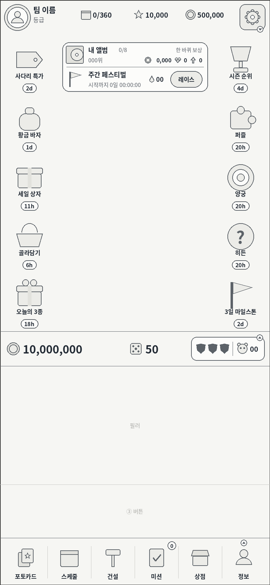
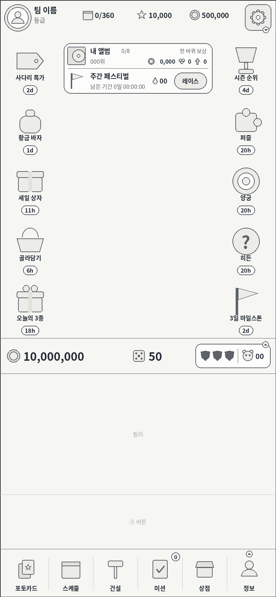
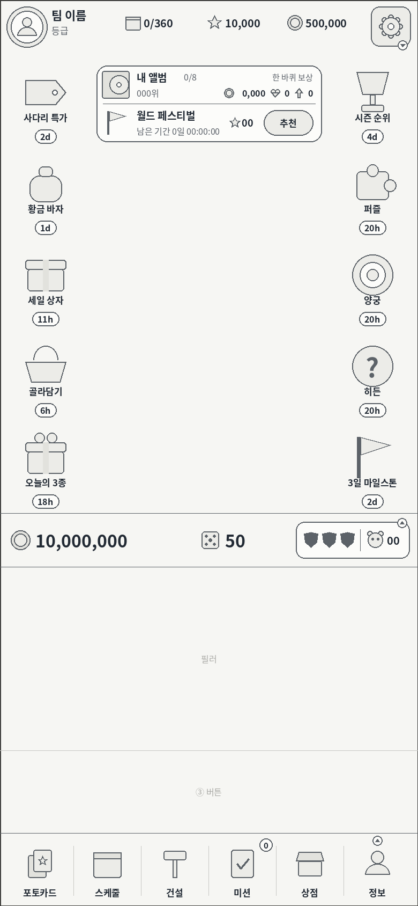
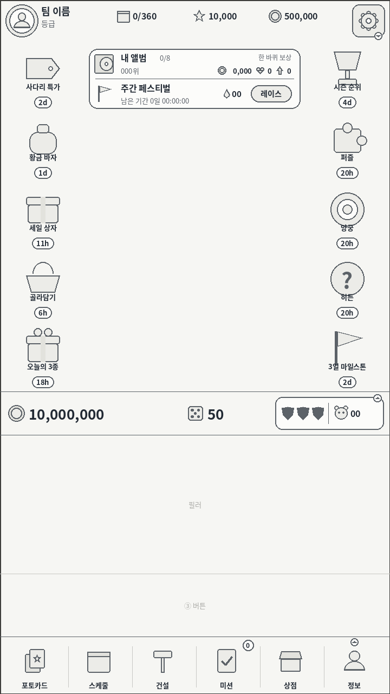
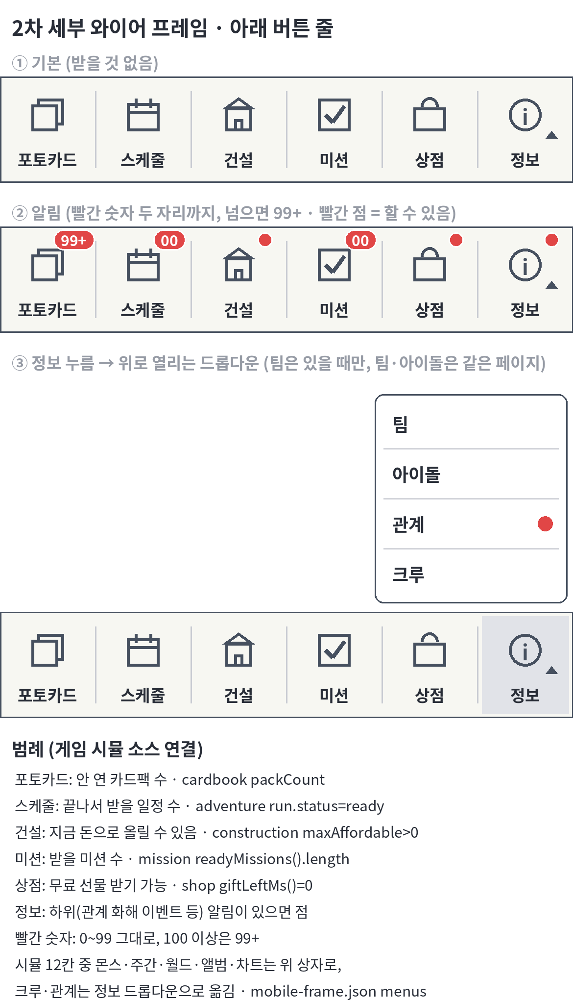
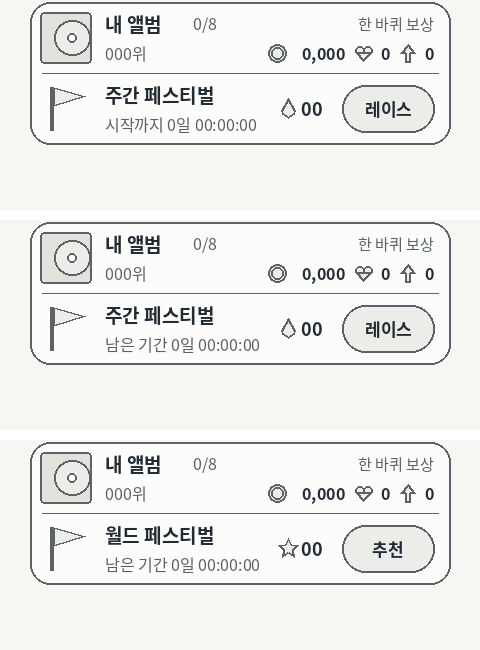
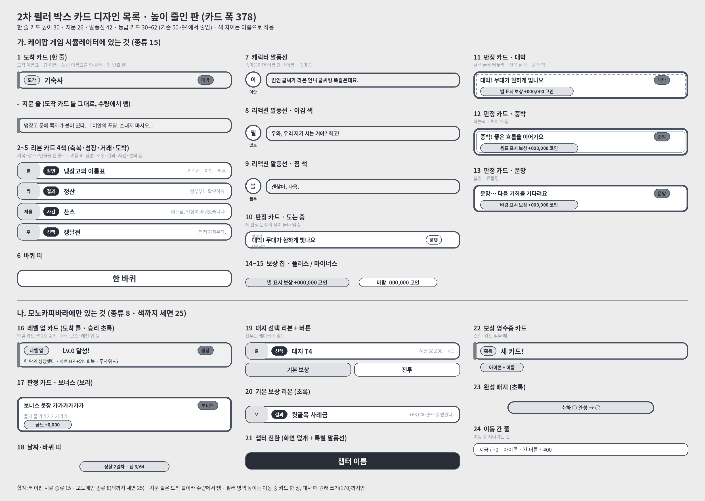
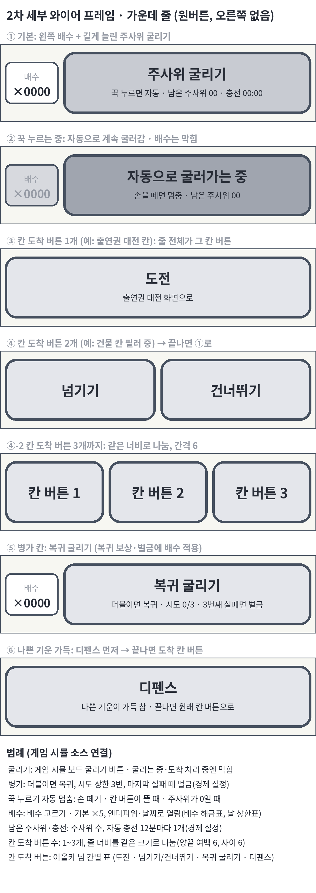
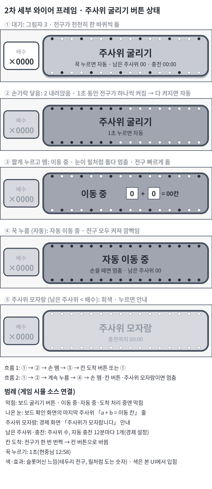
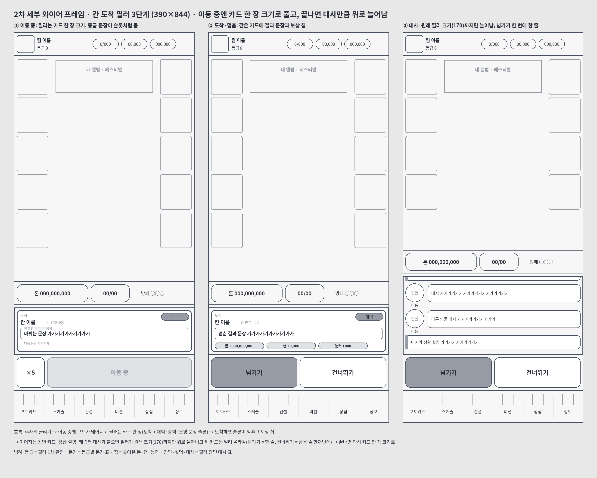

| 항목 | 내용 |
|---|---|
| 작성 | 콘텐츠 기획(이올카) · 2026-11-19 (KST) |
| 함께 정함 | UI 기획(제나) — 와이어 v3 · 설계 r50 읽기(JSON은 제나님만 저장) |
| 지시 | 현중 11/19 「hud 제작」 방: 상세 기획서 · 시안 먼저 · 글자 수·자리 수는 물어보고 적기 · 텍스트 박스에 실제 데이터 이름 연결 · 현황판·게임 시뮬·발란스 시뮬 세 곳을 보고 결정 |
| 양식 | P86 고정 7장 + 문서 정보(S/산출/개발진행기획_v01/작성기준_v01/작성AI_프롬프트.md:7) + v1.2에서 요소별 표·글자 수 표·데이터 이름표·화면 설명·흐름·여쭤볼 것을 보탬 |
| 표시 | 「현중 11/19 결정」 = 오늘 방에서 현중이 직접 정한 것 · 「제안」 = 제나·이올카 안 · 「현중 확인 중」 = 글자 수·숫자 자리 수처럼 현중께 여쭤보는 중(짐작으로 적지 않음) |
| 범위 | HUD 메인·메뉴. 연결 페이지 안쪽은 이름만. 수치·보상은 원본 숫자만 줄 번호와 함께 옮김. |
경로 약어: S = kpopmonsters/docs/planning/삼중AI_공용_20260929/, UG = ui-studio/src/tools/uxStudio/guide/, ST = ui-studio/docs/collaboration/STATUS.md, 용어 = S/산출/툴기획/게임UX기획스튜디오_자료분석_20261113_0914_v02/UI용어_분류초안_v02.json, S12 · S13 = S/산출/시스템기획/S12_로비.md · S13_이벤트운영.md, D = ui-guideline-israt/ui-studio/designs/ux-31671dd8.json.
현중님이 한 번에 보실 목록입니다. 아래는 오늘 정리된 확정과, 아직 컨펌이 필요한 제안입니다. 그림은 각 절 맨 위에 있습니다. 2절 전체 화면 · 아래 메뉴 · 4-4 앨범·페스티벌 · 4-8-2 필러 카드 · 4-8-3 굴리기·필러 3단계 · 4-9 글자 수.
| # | 절 | 항목 | 제안·확정 (한 줄) |
|---|---|---|---|
| 1 | 4-9 · 1번 | 돈 표시 | 확정(13:53). 모든 자리, K·M·B 안 씀, 넘치면 그 숫자 글자만 작아짐 |
| 2 | 4-9 · 2번 | 주사위 표시 | 확정(13:58·13:59). 「가진 개수/상한」, 1,000개부터 K·M. 제안: 표시 상한은 자동 충전 상한(chargeCapOf / dice_cap_level.csv). (현중 컨펌 후 확정) |
| 3 | 4-9 · 3번 | 몬스 기분 게이지 | 확정(14:07·14:08). 칸 없이 한 줄, 값=방패 수(최대 3) |
| 4 | 4-9 · 4번 | 프로필 레벨 | 제안: HUD 프로필에 전용 레벨 숫자는 두지 않음(프로필 전용 level 키 없음). 헤더 등급은 팀 등급 이름(최장 「글로벌 아이콘」 7자, idol_team_grade.csv). 엔터파워 숫자는 15번 확정 규칙을 따름. (현중 컨펌 후 확정) |
| 5 | 4-9 · 5번 | 앨범 칸 차트 순위 | 제안: 1~100까지 「n위」(최대 「100위」 4자). music_career_rules.json:764 · 938 cohortSize=100, maxRank=100. 100 밖은 21번. (현중 컨펌 후 확정) |
| 6 | 4-9 · 6번 | 앨범 칸 남은 시간 | 제안: HUD는 페스티벌 칸과 같은 「0일 00:00:00」 형식(12:37, 차트 24시간이라 최대 「1일 00:00:00」 11자, music_career_rules.json:765 durationMs=86400000). 차트 로비는 시뮬 {hours}시간 {minutes}분(view.mjs:508–511, music_career_ui.json:352). (현중 컨펌 후 확정) |
| 7 | 4-9 · 9번 | 프로필 유저 이름 | 제안: 팀 이름 최대 12자(growth.mjs:26–29 TEAM_NAME_MAX, check_team.mjs:46). 계정 이름 상한 키는 없고 예시 「테스트 계정」 6자(mobile-frame.json:36). 칸 너비 62px · 글자 13. 넘치면 글자를 줄인 뒤 …. (현중 컨펌 후 확정) |
| 8 | 4-9 · 10번 | 앨범 이름 | 제안: 샘플 최장 16자(music_samples.json Promises to Keep). 팀명 포함 형식은 더 길어질 수 있음. 칸을 넘기면 글자를 줄인 뒤 …. 설계 Face_AlbumTitle 너비 194px · 글자 12. (현중 컨펌 후 확정) |
| 9 | 4-9 · 11번 | 페스티벌 이름·이벤트 문구 | 제안: 3상태 표 이름 「주간 페스티벌」·「월드 페스티벌」(7자) 그대로. 등록 제목은 앨범 이름과 같은 넘침 규칙, 또는 「등록 없음」(5자). (현중 컨펌 후 확정) |
| 10 | 4-9 · 12번 | 이벤트 박스 안 문구 | 제안: 한 줄. 설계 문구 최장 「3일 마일스톤」 7자. 칸 너비 67px · 글자 7. 넘치면 글자를 줄인 뒤 …. (현중 컨펌 후 확정) |
| 11 | 4-9 · 13번 | 하단 6칸 메뉴 이름 | 제안: 지금 이름 그대로, 최대 4자(포토카드). 칸 너비 58px · 글자 9. (현중 컨펌 후 확정) |
| 12 | 4-9 · 14번 | 하위 메뉴 이름 | 제안: 확정된 이름 그대로. 최장 「아이돌(멤버)」 8자. 드롭다운 너비 140px · 글자 12. (현중 컨펌 후 확정) |
| 13 | 4-9 · 2번 | 주사위 상한의 뜻 | 제안: 표시 상한은 자동 충전 상한(chargeCapOf / dice_cap_level.csv). (현중 컨펌 후 확정) 값은 자동 충전 상한(chargeCapOf / dice_cap_level.csv 30~120) |
| 14 | 여쭤볼 것 17 | 주간 등수 월드 이월 | 제안: HUD에는 월드 이월 등수를 두지 않고 페스티벌·월드 로비에서 다룹니다(12:28). 이월 여부는 앨범발매_기획서.md:211(옮기지 않음)을 후보로 둡니다. 08장 R-08-8·음악앱_통합상세기획서.md:93은 이월이라고 합니다. (현중 컨펌 후 확정) |
| 15 | 여쭤볼 것 18 | 주간 페스티벌 보상 | 제안: HUD에 주간 보상 목록을 두지 않습니다(12:28). 보상 내용은 원본이 갈리므로, 페스티벌 로비에서는 게임 시뮬·현황판에 있는 지금 값(레이스 연료 등)을 보여 줍니다. (현중 컨펌 후 확정) |
| 16 | 여쭤볼 것 19 | 주간 크루 출전 | 제안: 주간은 개인만(앨범발매_기획서.md:86), 크루는 월드 로비에서 다룹니다. 08장과 월드 제안서는 주간에도 크루를 적습니다. (현중 컨펌 후 확정) |
| 17 | 여쭤볼 것 21 | 차트 밖 순위·보상 | 제안: 차트 밖이면 순위는 「차트 밖」으로 보여 줍니다(축은 100위까지, maxRank=100). 한 바퀴 보상 칸은 그대로 두고, 값은 차트 밖 규칙을 쓰며 이 문서에서 숫자를 짓지 않습니다. (현중 컨펌 후 확정) |
| 18 | 여쭤볼 것 22 | 자동 멈춤 | 제안: 시뮬처럼 나쁜 기운 상한·출연권 대전·허브 도착에서 자동을 멈춥니다(play.html:1906~1909). 그 밖의 칸 도착 버튼에서는 멈추지 않습니다(시뮬 지금 동작). (현중 컨펌 후 확정) |
| 19 | 여쭤볼 것 23 | 짓기·증축 위치 | 제안: 짓기·증축은 하단 건설로 두고, 도착만으로 키우지 않습니다(02장:11). (현중 컨펌 후 확정) |
| 20 | 여쭤볼 것 24 | 초기 배수 | 제안: 기본 배수는 ×5, ×1·×2·×5는 처음부터 열립니다(economy_config.csv:4 시작 주사위 50이면 천장 ×5, dice_mult_day_cap.csv:2 「×5 기본」). (현중 컨펌 후 확정) |
| 21 | 여쭤볼 것 25 | 36번 칸 | 제안: 이 문서 칸 표의 출연권 대전(6·16·26·36)을 따릅니다. mono-filler.json:238은 36을 지금 해외 연수 칸이라 적습니다. (현중 컨펌 후 확정) |
| 22 | 여쭤볼 것 26 | 찬스 칸 룰렛 | 제안: 찬스 칸은 한 줄만 두고 룰렛은 돌리지 않습니다(이 표 추천안). (현중 컨펌 후 확정) |
| 23 | 여쭤볼 것 27 | 자동 중 색 | 제안: 회색은 주사위가 모자랄 때만, 자동 중은 슬롯머신 불빛입니다(현중 11/19 12:58 확정, 그림 03의 ③·④·⑤와 같음). (현중 컨펌 후 확정) |
| 24 | 여쭤볼 것 28 | 필러를 여는 칸 | 제안: 02장:15대로 건물·창구를 포함한 28칸에서 필러를 엽니다. 시뮬 play.html:1837은 건물만 엽니다. (현중 컨펌 후 확정) |
| 25 | 여쭤볼 것 29 | 2차 룰렛 연출 | 제안: 2차 판정 숫자는 기획 원본(economy_config.csv:56–60, 02장:15)을 따르되, 필러 박스 연출은 시뮬처럼 정해진 결과에서 멈추고 2차 룰렛은 돌리지 않습니다(mono-filler.mjs:3 · 148). (현중 컨펌 후 확정) |
| 26 | 여쭤볼 것 30 | 필러 칩 | 제안: 필러 등급 카드는 시뮬처럼 돈 칩만 붙입니다(mono-filler.mjs:150–157). 팬·능력은 필러 박스에 넣지 않습니다. (현중 컨펌 후 확정) |
| 27 | 여쭤볼 것 31 | 말하는 사람 자리 | 제안: 시뮬처럼 이름 첫 글자 뱃지를 둡니다(mono-filler.mjs:142). (현중 컨펌 후 확정) |
| 28 | 여쭤볼 것 32 | 없는 장면 | 제안: 장면·대사가 없는 칸은 시뮬처럼 도착 머리만 두고, 있는 원본만 씁니다. 새로 짓지 않습니다. (현중 컨펌 후 확정) |
| 29 | 여쭤볼 것 33 | 필러 바깥 버튼 이름 | 제안: 「넘기기」(09장:107 R-09-22, mono-filler.json:242 sceneNext, 그림 02·05의 버튼 이름). (현중 컨펌 후 확정) |
| 30 | 여쭤볼 것 34 | 판정 이름 | 제안: 필러 박스 겉면은 「대박·중박·운망」(02장:15, mono-filler.json, 그림 06의 11~13번 카드). economy_config.csv:26–31의 올킬·차트인·광탈은 경제 키로 둡니다. (현중 컨펌 후 확정) |
| 31 | 여쭤볼 것 35 | 필러 대사 글자 수 | 제안: 한 줄 38자(filler_dialogue_lint_rule.csv max_chars=38). 넘치면 글자를 줄인 뒤 …. 데이터 95줄 중 22줄이 38자를 넘고 최장은 56자입니다. (현중 컨펌 후 확정) |
| 32 | 글자 넘침 | 공통 규칙 | 제안: 글자는 칸을 넘기면 글자를 줄인 뒤 …으로 자름. 돈·엔터파워·팬은 모든 자리를 보여 주고 글자만 줄임(이미 확정). (현중 컨펌 후 확정) |
본문은 아래 용어만 씁니다. 가이드 용어가 없는 자리 이름(띠, 이벤트 박스, 레일)은 원본 문서에 쓰인 이름을 그대로 쓰고 출처를 적었습니다.
| 용어 | 이 문서에서의 뜻 | 출처 |
|---|---|---|
| 헤더 | 화면 맨 위 줄(대표 이미지 · 팀 이름+등급 · 게이지 · ☰) | 용어:50 · ST:195 |
| 하단 내비게이션 | 바텀 메뉴 6칸. 주요 화면 사이 이동 | 용어:109(별칭 「탭 바」) |
| 탭 | 한 화면 안에서 보기를 바꾸는 단추 줄(예: 팀 / 개별) | 용어:124 |
| 버튼 | 누르는 부품. 화면 이동 · 팝업 열기 · 뒤로 · 닫기 행동을 연결 | S/산출/툴기획/T04_게임UX기획스튜디오.md:25 · 27 · 673 |
| 드롭다운 메뉴 | 설계 용어. 버튼을 누르면 항목 목록이 펼쳐지는 선택 메뉴 | 용어:179~181 · UG/USER_GUIDE.md:236 |
| 접이식 메뉴 | 툴에서 펼침을 만드는 부품. 항목마다 화면 연결을 걸 수 있음 | ui-studio/src/tools/uxStudio/units.mjs:34 · UG/TOOL_SPEC.md:256 · UG/USER_GUIDE.md:178 · 276 |
| 드롭다운(툴 입력) | 툴의 입력용 select 부품. 항목마다 화면을 연결할 수 없음 | ui-studio/src/tools/uxStudio/controls.mjs:6 · 242 · UG/TOOL_SPEC.md:258 |
| 캐러셀 | 한 자리에서 여러 장을 옆으로 넘겨 보이는 패턴. 툴에 넣을 수 있는 부품이 아님 | 용어:269~273 · 용어:280 |
| 모달 다이얼로그 | 뒤 화면 입력을 막고 위에 뜨는 창 | 용어:327 · T04:108 |
| 팝업 | 위에 뜨는 창을 넓게 부르는 말 | 용어:342 |
| 스크림(딤) | 창 뒤를 어둡게 하는 층. 입력 차단과는 별개 | 용어:355 · T04:108 |
| 전체 화면 | 로비 위를 덮는 화면 + ← | S12:127 · 몬스:146 |
| 카드 | 한 덩어리 정보를 담은 사각 칸(팀 카드 · 멤버 카드) | 용어:519 |
| 배지 | 버튼 모서리의 점 또는 숫자. 「빨간 점」은 받을 것이 있을 때만 | 용어:660 · UG/TOOL_SPEC.md:110 · S12:145 |
| 게이지 | 채워지는 막대 · 원형 표시 | T04:258 · ST:221 |
| 레일(좌우 칸) | 화면 좌우의 이벤트 칸 줄. 각 5칸, 71×71 | S13:124 · UG/USER_GUIDE.md:705 |
| 이벤트 박스 | 상단 가운데 y61~132 · 210×71 칸 | r43 Overlay_EventBox · UG/USER_GUIDE.md:709 |
| 띠 | 필러 위 돈 · 주사위 · 몬스 기분 게이지 줄(`Band_StageFiller`)(Band_StageFiller) | ST:203 · 221 |
---
ux-31671dd8 r50의 screens[0] G1_Ingame. 배치 좌표는 현중 11/19 확정값(띠 477~527, 필러 527~697, 버튼 697~774, 하단 774~844)을 씁니다(제나 부품 표 0절). r43·r50 계산값은 이보다 1~2px 큽니다. 모노폴리 GO 샘플 배치가 아닙니다(현중 11/19 결정: 「지금 우리 것에 적용해야지 … 우리는 필러 공간도 있어」).S12:145).전체 화면 그림 07·08·09는 390×844에서 페스티벌 세 상태를 본 것이고, 10은 360×640 확인용입니다. 가운데 이벤트 박스는 4-4절 그림 01과 같습니다.

그림 뒤 결정(현중 시각): 띠의 방패 아이콘 3개는 몬스 기분 게이지 한 줄로 바뀜(14:07·14:08). 주사위는 「가진 개수/상한」으로 보여 줌(13:58·13:59, 그림은 개수만). 왼쪽 3번 이름은 「세일 · 행운 상자」(4-6절).

그림 뒤 결정(현중 시각): 띠의 방패 아이콘 3개는 몬스 기분 게이지 한 줄로 바뀜(14:07·14:08). 주사위는 「가진 개수/상한」으로 보여 줌(13:58·13:59, 그림은 개수만). 왼쪽 3번 이름은 「세일 · 행운 상자」(4-6절).

그림 뒤 결정(현중 시각): 띠의 방패 아이콘 3개는 몬스 기분 게이지 한 줄로 바뀜(14:07·14:08). 주사위는 「가진 개수/상한」으로 보여 줌(13:58·13:59, 그림은 개수만). 왼쪽 3번 이름은 「세일 · 행운 상자」(4-6절).

그림 뒤 결정(현중 시각): 띠의 방패 아이콘 3개는 몬스 기분 게이지 한 줄로 바뀜(14:07·14:08). 주사위는 「가진 개수/상한」으로 보여 줌(13:58·13:59, 그림은 개수만). 왼쪽 3번 이름은 「세일 · 행운 상자」(4-6절).
세로 영역은 현중 11/19 확정값(띠 477~527 · 필러 527~697 · 버튼 697~774 · 아래 774~844)을 씁니다. 아래 r43 읽은 값은 비교용입니다. 좌표는 ux-31671dd8 r43 인게임 화면(ui-studio/docs/planning/_backup/20261119_제나/1041_r43_before_v3.json, revision 43)의 요소를 부모 기준 %로 풀어 390×844 px로 읽은 값입니다. 배치 %는 부모 영역 기준입니다(UG/USER_GUIDE.md:178, ui-studio/src/tools/uxStudio/responsive-layout.mjs:71, model.mjs:132). 기본 화면은 390×844(UG/USER_GUIDE.md:708, canvas-device-preview.mjs:5 · 6). 앞 판에서 띠 Band_StageFiller의 y를 화면 높이 %로만 읽어 577~637로 적었는데, 이 요소는 Group_GameView(높이 699)의 자식이라 r43·r50 계산 세로는 478~528입니다. 이 문서의 배치 좌표는 현중 11/19 확정값(띠 477~527 · 필러 527~697 · 버튼 697~774 · 하단 774~844, 제나 부품 표 0절)을 씁니다. 파일은 한 줄 JSON이라 줄 번호 대신 요소 이름을 적습니다.
| 구역 | 세로 위치 | 들어가는 것 | 콘텐츠 역할 | 중요도(제안) | 근거 |
|---|---|---|---|---|---|
| 헤더 | 0~50 | 대표 이미지(프로필) · 팀 이름+등급 · 나쁜 기운 · 엔터파워 · 팬 · ☰ | 우리 팀이 지금 어떤지 한눈에. ☰ = 계정 메뉴 | 핵심 | r43 HUD_Top · ST:195 · S12:147 |
| 이벤트 박스 | y61~132 · 210×71 | 내 앨범 · 페스티벌 한 자리(현중 11/19 결정) | 음반 제작 → 페스티벌 출전 신청, 게임의 큰 목표 | 핵심 | r43 Overlay_EventBox · UG/USER_GUIDE.md:709 · 음악앱:13 |
| 레일(좌 · 우) | 61~472 | 왼쪽 5 · 오른쪽 5 이벤트(4-6절) | 기간 이벤트 입구. 로비에서는 펼침 | 주요 | r43 Area_Side_Left · Area_Side_Right · UG/USER_GUIDE.md:705 · S13:122 · 126 |
| 띠 | 477~527 | 돈 · 주사위 · 몬스 기분 게이지 | 보드 자원과 수비 상태 | 핵심 | r43 Band_StageFiller(부모 Group_GameView) · ST:221 · 몬스:92 |
| 필러 | 527~697 | 도착 필러 박스(최대 약 170, 박스 안 버튼 없음). 상세는 4-8-2절 | 보드 도착 연출 | 주요 | 현중 11/19 확정 Area_Filler(세로 527~697) · r43 계산 528~699 · 02장:21 · 09장:106~107 R-09-21·22 · 제나 G5 :87 · 92 |
| ③ 버튼 | 697~774 | 왼쪽 배수 + 넓은 주사위 굴리기(칸 도착 때는 그 칸 버튼 1~3개). 상세는 4-8-3절 | 보드 진행 | 핵심 | r43 Group_Action · S12:113 · 현중 11/19 12:50 · 12:54 · 12:55 · 12:58 |
| 하단 내비게이션 | 774~844(70) | 포토카드 · 스케줄 · 건설 · 미션 · 상점 · 정보 | 매일 오가는 6개 화면 | 핵심 | r43 HUD_Bottom · 현중 11/19 결정 · 용어:109 |
필러 원본: 「필러 240 · 진행 96 · 하단 102는 공통 설정, 상단 54 · 게이지 60 · 정보 40은 편집 제안」(T04:258)은 시뮬레이터 값입니다. 이 문서의 필러 자리는 현중 11/19 확정 Area_Filler 세로 527~697(170)이며, 최대 높이는 170입니다. r43 계산값은 528~699입니다. 필러 안에는 버튼이 없습니다(S/산출/전체기획서/전체기획서_세부_v1.md:102).
그림 ①은 받을 것이 없는 기본, ②는 알림(0~99 · 100부터 99+ · 빨간 점), ③은 정보 드롭다운(팀이 있으면 팀 · 아이돌 · 관계 · 크루, 위로)입니다.

그림 뒤 결정(현중 시각): 그림 ③ 항목 이름은 「아이돌」이고, 본문은 「아이돌(멤버)」(12:48·12:49).
하단 6칸의 역할(근거는 오늘 아침 보고 S/보고/20261119_이올카_로비메뉴_콘텐츠근거.md):
| 칸 | 하는 일 | 근거 |
|---|---|---|
| 포토카드 | 배치 · 명함집 · 카드북, 처음은 배치 | 카드_기획서.md:398~399 |
| 스케줄 | 아이돌 · 몬스를 보내 보상 · 라포 | 산출_기획서_20261113_스케줄35통합_규칙.md:3 |
| 건설 | 돈으로 건물을 짓고 팬을 얻음 | S12:112 |
| 미션 | 하던 일을 세는 장부 | S/산출/시스템기획/S11 358줄(아침 보고 표 5) |
| 상점 | 루비로 사는 곳 | S/산출/시스템기획/S07b 27줄 |
| 정보 | 드롭다운(위로): 팀이 있으면 맨 위에 「팀」, 그다음 아이돌(멤버) · 관계 · 크루. 팀과 아이돌은 같은 정보창 | 현중 11/19 10:35 · 12:48 · 12:49 |
하단 6칸 알림(현중 11/19 12:47 · 12:49 확정): 숫자는 0~99를 그대로, 100부터는 「99+」. 숫자가 아닌 알림은 빨간 점. 시뮬 하단 버튼은 아이콘과 이름만 있고 배지는 없습니다(src/simulator/shared/mobile-frame.mjs:134~135). 값의 근거만 아래에 적습니다.
| 칸 | 알림 값의 근거 | HUD 배지 표시 |
|---|---|---|
| 포토카드 | 보유 팩 수 src/game/economy/packs.ts:14 packHold(s.live.packs). src/game/economy/cardbook.ts:183이 이 값을 씀 | 시뮬에 없음 |
| 스케줄 | 받을 수 있는 끝난 스케줄 개수를 HUD 배지로 쓰는 키는 시뮬 하단 버튼에 없음 | 시뮬에 없음 |
| 건설 | 지금 돈으로 짓기·증축할 수 있는지를 HUD 배지로 쓰는 키는 시뮬 하단 버튼에 없음. 발란스 화면 건설 탭의 받을 수 있는 개수는 src/ui/game/main.ts:305~306(이정표·세트) | 시뮬에 없음 |
| 미션 | 받을 수 있는 미션 src/game/economy/missions.ts:160 readyMissions(:156~157 missionState, :23 상태) | 시뮬에 없음(mobile-frame.mjs:135) |
| 상점 | 선물 주사위 남은 시간 src/game/economy/shop.ts:81~88 giftLeftMs / claimGift(:41 giftDice · giftMs) | 시뮬에 없음 |
| 정보 | 정보 칸 빨간 점·숫자 키 | 시뮬에 없음 |
현재 설계 파일은 ui-guideline-israt/ui-studio/designs/ux-31671dd8.json r50(저장 2026-11-19 11:09 KST)입니다. 위 좌표는 현중 11/19 확정 y(띠 477~527 · 필러 527~697 · 버튼 697~774 · 하단 774~844)입니다. r43·r50 계산값(478~528 · 528~699 · 699~776 · 776~844)과 1~2px 다릅니다. r50에서도 HUD 메인 화면은 screens[0](id main, name G1_Ingame)입니다.
| 확인한 것 | 코드 · 표 | 뜻 |
|---|---|---|
| 「팀·성장 정보」 메뉴 | data/simulator/mobile-frame.json:69 · 탭 3개 team(팀 정보) · members(멤버) · abilities(능력) :253~266 | 폰 화면 안 정보 패널. 연결된 내용이 없으면 「연결된 팀 정보를 확인하는 공간입니다」(:71) |
| 패널 열기 · 닫기 | src/simulator/shared/mobile-frame.mjs:124~126 · 149~152 openInformation(key) · closeInformation() | 탭 id로 패널 한 칸만 보임. 같은 탭을 다시 누르면 닫힘 |
| 오디션이 부르는 곳 | src/audition/board-app.mjs:411(팀 보기 → openInformation('team')) · :414(후보 보기 → openInformation('abilities')) | 같은 패널을 탭 id만 바꿔 엶 |
| 공통 캐릭터 정보창 | src/simulator/shared/character-info-view.mjs:77(카드 줄 kci-cards) · :79 · 83(창 kci-dialog, role=dialog) · :97~99(팀 / 개별 탭) · :70(처음 탭 = 팀) · :134(카드 줄 첫 칸 = 팀 카드) · :186(멤버 카드) | 팀 카드 · 멤버 카드를 누르면 같은 창이 팀 또는 개별 탭으로 열림 |
| 기존 메뉴와의 관계 | src/simulator/shared/character-info-binding.mjs:50(기존 kmf-information-menu를 받아 씀) · mobile-frame.mjs:258 | 정보창 제어가 「팀·성장 정보」 메뉴 자리를 이어받음 |
| 정보창 규격 | S/산출/툴기획/공통캐릭터정보모달_계획_v01.md:14(팀·멤버 카드 → 팀/선택 멤버 정보 → 능력 → 세부 → 닫기) · :16(폰 안을 덮음, 닫으면 원래 위치 · 초점 보존, Escape는 정보창만 닫음) · :20~23(등록 21개 화면 공통) | 모든 게임 화면이 같은 창을 씀 |
| 헤더 대표 이미지 | mobile-frame.mjs:116(kmf-avatar는 div, 누름 동작 연결 없음) | 누르면 여는 동작은 시뮬에 아직 없음 |
| 기존 규칙 | S12:147 R-S12-14 「초상 · 닉네임 · 알약을 누르면 전체 화면이 닫힘 · ☰ = 계정 메뉴」 | 전체 화면이 열려 있을 때의 규칙 |
새 창은 만들지 않습니다. 설계 용어의 드롭다운 메뉴는 정보 · 몬스 기분 게이지 · 설정(☰) 세 곳에만 씁니다. 툴의 「드롭다운」은 입력용 select 부품이라 항목마다 화면을 연결할 수 없어(controls.mjs:6 · 242, UG/TOOL_SPEC.md:258), 와이어는 접이식 메뉴로 펼침을 만들고 항목마다 화면 연결을 걸었습니다(units.mjs:34, UG/TOOL_SPEC.md:256, UG/USER_GUIDE.md:178 · 276). 이 세 버튼에는 펼침 표시(작은 화살표)를 붙입니다(현중 11/19).
앨범·페스티벌은 드롭다운이 아닙니다. 버튼 모양의 박스 하나 안에 두 칸을 두고, 칸마다 바로 화면으로 갑니다(현중 11/19).
기획 의도의 처음 탭(프로필=팀, 정보→아이돌=개별)은 그대로입니다. 툴 연결에 탭을 고르는 값이 없어 와이어에서는 둘 다 팀 탭으로 열립니다.
| 요소(자리) | 종류 | 펼침 항목 | 열리는 페이지 | 처음 탭 | 뒤로 · 닫기 | 펼침 방향 | 근거 |
|---|---|---|---|---|---|---|---|
| Btn_Profile(헤더 왼쪽 대표 이미지) | 바로 화면 이동 버튼 | 없음 | 모바일 공통 캐릭터 정보창 | 팀 탭 · 팀 카드 | 닫기 · Escape → 로비 그대로 | — | 현중 11/19 결정 · 정보창 규격:16 · character-info-view.mjs:70 |
| Menu_Info(하단 6번 정보) | 펼침 메뉴 버튼 | ① 팀(팀이 있을 때만) | 모바일 공통 캐릭터 정보창 | 팀 탭 · 팀 카드 | 닫기 · Escape → 로비 | 위로 | 현중 11/19 12:48 · 12:49 확정 · 팀결성_팀스탯_기획서.md:63 · 204 · character-info-view.mjs:70 · 97~99 |
| 〃 | 〃 | ② 아이돌(멤버) | 모바일 공통 캐릭터 정보창 | 개별 탭 · 멤버 카드 | 닫기 · Escape → 로비 | 위로 | 현중 11/19 결정 · character-info-view.mjs:97~99 · 186 |
| 〃 | 〃 | ③ 관계 | 관계 화면(simulator_module_relation) | 「아이돌끼리」 또는 들어온 곳 기준 | ← 로비 | 위로 | 라포AI탐험_기획서.md:205 · 209 |
| 〃 | 〃 | ④ 크루 | 응원 크루 화면 | 크루 첫 화면 | ← 로비 | 위로 | 응원크루_완료판_v1_클로드.md:30 · 39 |
| Menu_ShieldMons(띠 오른쪽) | 펼침 메뉴 버튼 | ① 방패 | 방패 설명 팝업(남은 수 / 최대 3) | — | 바깥 누름 · 닫기 | 위로 | 몬스:92 · data/game/economy_config.csv:61 |
| 〃 | 〃 | ② 몬스 | 몬스 로비(전체 화면) | 지킴이 | ← 로비 | 위로 | 몬스:92 · 146 |
| Item_MyAlbum(합친 박스의 앨범 칸) | 바로 화면 이동 버튼(펼침 표시 없음) | 없음(칸을 바로 누름). 한 바퀴 보상이 3개를 넘으면 「보상 보기」가 작은 창(팝업)을 염 | 차트 중이면 이 곡 차트, 아니면 내 앨범 화면 | — | ← 로비. 팝업은 닫기 | — | 현중 11/19 12:37 확정 · 06장:92 · 122 · P228:395 · 412~413 · album-library-hud.mjs:13 · 27 · 33 · 73 |
| Item_Festival(합친 박스의 페스티벌 칸) | 바로 화면 이동 버튼(펼침 표시 없음) | 없음(칸을 바로 누름). 칸은 항상 있고 버튼은 항상 켜짐(주간·쉬는 기간 「레이스」, 9주차 「추천」) | 칸 본체는 페스티벌(또는 월드) 로비. 「레이스」는 레이스 입장, 「추천」은 내 월드 출전곡에 인기 재화 사용 | 지금 기간 | ← 로비 | — | 현중 11/19 12:37 확정 · 08장:74~75 · 98~99 · 02장:33 · 07장:11 · festival-panel.mjs:475 |
| Group_Money · Group_Dice(띠) | 누를 수 없는 표시 | — | 없음. 세 도구의 공통 프레임·발란스 헤더는 잔액만 보여 줍니다 | — | — | — | S12:143 · 3종대조 분류표 · mobile-frame.mjs:118~119 · 145~146 · 195 |
| Group_Settings · Menu_Settings(헤더 오른쪽 ☰) | 펼침 메뉴 버튼 | 계정 바꾸기 · 지금 저장 · (개발 빌드만) 개발 메뉴 | 계정 메뉴 | — | 닫기 | 아래로 | S12:147 |
| 하단 포토카드·스케줄·건설·미션·상점 | 바로 화면 이동 버튼 | 없음 | 각 전체 화면 | — | 다시 누르면 닫힘(S12:126) | — | 현중 11/19 결정 · 4-8절 |
| 레일 Slot_Left_1~5 · Slot_Right_1~5 | 바로 화면 이동 버튼 | 없음 | 각 이벤트 창(이름만, 화면은 시뮬에 아직 없음) | — | — | — | S13:122 · 4-6절 |
| Img_Profile · 방패 아이콘 · 캐릭터 이미지 | 이미지(누를 수 없는 표시와 구분되는 그림 자리) | — | 부모 버튼이 받을 때만 동작 | — | — | — | 현중 11/19 결정 |
ui-studio/samples/capybara-go/docs/collaboration/reports/20261117_video_ui_analysis.md 110줄).S12:126). 정보 드롭다운도 같은 규칙(제안).함께 여는 페이지 = 「모바일 공통 캐릭터 정보창」 하나입니다(공통캐릭터정보모달_계획_v01.md:1 · 14, character-info-view.mjs:79 · 83).
character-info-view.mjs:97~99). 위쪽 카드 줄 첫 칸은 팀 카드, 그 뒤는 합류한 멤버 카드입니다(:134 · 186, 정보창 규격:14).팀결성_팀스탯_기획서.md:211) + 컨디션(헤더 테두리와 같은 팀 평균, ST:221).팀이 생기는 조건: S/산출/개발진행기획_v01/콘텐츠별_v03/팀결성_팀스탯_기획서.md:63 · 204 — 사옥 2단계에서 2번째 멤버가 들어와 멤버가 2명이 되면 「팀」이 결성됩니다(현중 10/16 14:38 확정). data/idol_ability_sim/idol_growth_team_form_step.csv:2 form_01_join, 트리거 member_count_reaches_2. 헌법 제35조(S/산출/전체기획서/00_헌법_기획서기조.md:111)는 이 기획서(P147)로 링크합니다. 01_개요시나리오_클로드.md:23은 「결성부터 월드 무대까지」라는 시나리오 문장만 있고, 결성 인원 조건은 적지 않습니다.
flowchart TD
subgraph W["모바일 공통 캐릭터 정보창 (모달 다이얼로그)"]
T["팀 탭 · 팀 카드<br/>팀 이름 · 등급 · 그룹 능력 · 다음 등급 · 컨디션"]
M["개별 탭 · 멤버 카드<br/>멤버 능력 · 컨디션"]
T <-->|"탭 전환"| M
end
P["헤더 · 프로필(대표 이미지)"] -->|"누름 · 처음 탭 = 팀"| T
I["하단 내비게이션 · 정보"] -->|"드롭다운 위로 펼침"| D{"아이돌(멤버) · 관계 · 크루"}
D -->|"아이돌(멤버) · 처음 탭 = 개별"| M
D -->|"관계"| R["관계 화면 (전체 화면 + ←)"]
D -->|"크루"| C["응원 크루 화면 (전체 화면 + ←)"]
W -->|"닫기 · Escape"| L["로비 (원래 위치 · 초점 그대로)"]
전체 화면이 열려 있을 때 프로필을 누르면 기존 규칙대로 전체 화면을 먼저 닫습니다(S12:147). 전체 화면이 없는 로비에서 누르면 정보창을 엽니다(제안). 이 두 동작이 한 버튼에 걸리는 순서는 4-7절 남은 문제로 둡니다.
| 값 | 보이는 곳 | 고치는 곳 | 근거 |
|---|---|---|---|
| 팀 이름 | 헤더 · 정보창 팀 카드 | 결성 때 팀 이름 모달에서 정함. 결성 뒤 바꾸는 화면은 시뮬에 아직 없음 | ST:195 · 팀결성_팀스탯_기획서.md:211 · 발란스시뮬레이터_히스토리_1030.md:329 |
| 팀 등급 | 헤더 · 팀 카드 | 고치지 않음(팀 성장으로 바뀜) | 팀결성_팀스탯_기획서.md:211 |
| 컨디션(팀 평균) | 헤더 대표 이미지 테두리 게이지 · 팀 카드 | 고치지 않음 | ST:221 |
| 멤버 능력 · 컨디션 | 정보창 개별 탭 | 고치지 않음(스케줄 · 성장으로 바뀜) | character-info-view.mjs:203~208 |
| 아이돌 자리 | 포토카드 「배치」 아이돌 줄 | 포토카드에서만 | 카드_기획서.md:399 · 405 |
| 스태프 · 라포 | 관계(보기 전용) | 명함 교체는 명함집, 라포는 스케줄에서만 오름 | 라포AI탐험_기획서.md:205 · 아침 보고 표 2 |
원칙(제안): 「우리 팀 전체」는 프로필(팀 탭), 「멤버 한 명」은 정보 → 아이돌(개별 탭), 「사람 사이」는 관계 · 크루. 같은 값이 두 곳에 보여도 고치는 곳은 한 곳입니다.
그림 위부터 ① 페스티벌 아닌 기간(시작까지 · 레이스), ② 주간 페스티벌(남은 기간 · 레이스), ③ 월드 페스티벌(남은 기간 · 추천)입니다. 현중 11/19 12:37 확정.

현중 11/19 결정: 「합친다는 건 하나로 가는데 설명은 2개가 나온다는 뜻」 · 「기능이 합쳐지는 게 아니야」. 자리만 함께 쓰고 기능 · 설명은 따로입니다.
몬스 기분 게이지(띠 오른쪽 한 칸)
{shields, shieldMax, …}입니다(board-defense.mjs:10). 공통 모바일 프레임 헤더에는 방패 키가 없고(mobile-frame.json:77~95), 로비 시안 lobby-g1만 초기 세팅값 shields.left / shields.max를 그립니다. 엔진 값과 HUD를 잇는 키는 공통 프레임에 없음.ST:221 돈 170 · 주사위 84 · 방패 96에 몬스 아이콘을 더함 · 제안).S12:143의 「로비에선 상한 안 보임」과 r50 와이어의 「50/20」은 이 결정으로 바뀌었습니다.내 앨범 · 페스티벌(이벤트 박스 210×71) — 제나 12:36 2차 세부 와이어 프레임 세 가지 상태(현중 11/19 12:37 확정)
겉은 버튼 모양의 박스 하나이고, 안은 두 칸입니다. 펼침 표시는 없습니다. 주간과 월드는 기간이 겹치지 않습니다(앨범발매:53 · 공연스테이지 상세:46).
앨범발매_기획서.md:395 · 412~413).06_음원정령음방_클로드.md:92)은 한 시즌 최대 8곡(데뷔곡·창작곡 포함)이라고 하고, V-06-1(:122)은 앨범 제작 화면에 「시즌 남은 발매 수 n/8」이라고 적습니다. 시뮬 HUD 앨범 개수 배지는 발매된 앨범 수 count입니다(src/simulator/shared/album-library-hud.mjs:13 · 27 · 33 · 73).0일 00:00:00은 제나 12:36 그림의 시간 표시 형식입니다.| 기간 | 이름 | 시간 | 재화 수 | 버튼 |
|---|---|---|---|---|
| 페스티벌 아닌 기간(시즌 사이 쉬는 3일 포함) | 주간 페스티벌 | 시작까지 0일 00:00:00 | 연료 수 | 레이스 |
| 주간 페스티벌(1~8주 열린 기간) | 주간 페스티벌 | 남은 기간 0일 00:00:00 | 연료 수 | 레이스 |
| 월드 페스티벌(9주) | 월드 페스티벌 | 남은 기간 0일 00:00:00 | 인기 재화 수 | 추천 |
- 연료 수는 src/tools/growthBoard/live-state.mjs:62(payload.musicCareer?.journey?.balanceFestival?.fuel)입니다. 「레이스」는 연료 이벤트 입장입니다(src/simulator/music-career/festival-panel.mjs:475, weeklyRaceEnter → navigate('city', selection.entry.albumId)). 근거는 08장 R-08-6·R-08-7(08_월드페스티벌전투오리지널16_클로드.md:74~75). - 「추천」은 모은 인기 재화를 내 월드 출전곡에 쓰는 버튼입니다. 근거는 02장(02_보드찬스칸연출_클로드.md:33), 08장 R-08-20·R-08-21(:98~99), data/music_career/music_app_ui.json:186 popularitySupport 「인기 응원」, 산출_기획서_공연스테이지_상세_v1.md:44 · 46. 시즌 사이 쉬는 3일의 달력은 07_리드젠보상층시즌_클로드.md:11(break_days = 3)입니다. 5명 무리 순위는 HUD에 두지 않고 페스티벌 로비에서 보여 줍니다(4-8-1절).
02_보드찬스칸연출_클로드.md:33과 08장 R-08-7(:75)은 7일째 연료 드랍, 주간 레이스에 쓰고 그 주가 끝나면 소멸한다고 합니다. 결정 장부 D58(비앙카_발란스결정장부.md:127)은 연료가 앨범 리그에서 나오지 않고 주간 페스티벌 7일째 하루만이며 월드 주와 겹치지 않는다고 합니다. 이 원본은 바꾸지 않으며, 제나가 현중께 여쭤 본 상태입니다.S12:145). v1.1 165줄은 게이지·배지를 S12:144~145에 함께 묶었으나, S12:144는 이벤트 HUD를 로비에서 접지 않는다는 규칙이고, 빨간 점만 S12:145입니다. 로비 서류에는 게이지가 무엇을 채우는지가 없습니다.S/보고/20261119_이올카_HUD_3종대조_앨범페스티벌.md).| 부품 | 쓰는 곳 | 왜 | 스튜디오 상태 |
|---|---|---|---|
| 드롭다운 메뉴(설계 용어) · 접이식 메뉴(툴 부품) | 정보(위로) · 몬스 기분 게이지(위로) · ☰(아래로). 세 곳 모두 펼침 표시 | 한 버튼에 갈 곳이 2~3개 | 툴의 「드롭다운」은 입력용 select 부품이라 항목마다 화면을 연결할 수 없음(controls.mjs:6 · 242, UG/TOOL_SPEC.md:258). 와이어는 접이식 메뉴로 넣고 항목마다 화면 연결을 걸었음(units.mjs:34, UG/TOOL_SPEC.md:256, UG/USER_GUIDE.md:178 · 276) |
| 합친 버튼 박스(두 칸) | 내 앨범 · 페스티벌 | 자리만 하나로 두고 칸마다 바로 화면으로 감 | 드롭다운이 아님(현중 11/19). r47 와이어는 접이식 메뉴로 넣었음 → 시안에서 합친 박스·두 칸으로 고침 |
| 캐러셀 | 레일 오른쪽 2번(퍼즐) · 4-6절 안 B | 한 칸에 여러 이벤트를 넘겨 보여 칸 수 문제를 풂(제안) | 넣을 수 있는 부품 아님(용어:280 insertableWidget: false). r47 와이어는 오른쪽 2번에 페이지 점 3개만 그림 |
| 캐러셀 | 정보창 카드 줄(팀 카드 + 멤버 카드) | 멤버가 많을 때 넘겨 보기(제안) | 지금은 가로 칸 줄로 6장 보이고 넘치면 옆으로 이어짐(character-info-style.mjs:14). 캐러셀로 바꾸지 않아도 됨 |
(a) 샘플 이벤트 아이콘의 표시 유형 — 우리 S13은 모노폴리 GO 이벤트를 옮겨 온 문서라 샘플 유형이 그대로 들어 있습니다(S13:94~112).
| 유형 | 표시 | 근거 |
|---|---|---|
| 아이콘 + 남은 시간 | 레일 칸에는 재화 개수 대신 남은 시간 | S13:137 |
| 배지(점) | 받을 보상이 있을 때만 빨간 점. 새 회차는 「새」 점 한 번 | S13:137 · S12:145 |
| 배지(숫자) | 숫자 0이면 숨김, 점 모드와 숫자 모드 | UG/TOOL_SPEC.md:110 |
| 게이지(구간 막대) | 마일스톤 창 위 구간 막대 · 시즌 순위 창 시즌 마일스톤 막대 | S13:217 · 262 |
| 지갑과 분리 | 이벤트 재화는 상단 지갑에 겹쳐 그리지 않음 | S13:283 |
| 로비에서 펼침 | 레일은 로비에서 접지 않고 인게임에서는 평소 접음 | S13:126 · S12:144 |
(b) 우리 레일 10칸 배치표 — 우리 원본에 있는 이벤트만 넣었습니다. 자리 규칙: 특가 · 세일은 왼쪽에만, 미니게임은 오른쪽에만(S13:123).
| 칸 | 이벤트(틀 id) | 갈래 | 고정 여부 | 근거 |
|---|---|---|---|---|
| 왼쪽 1 | 사다리 특가(sale_step_ladder) | 마스몰 | 고정 | S13:104 · 122 |
| 왼쪽 2 | 황금 바자(sale_final_step) | 마스몰 | 회차 | S13:104 |
| 왼쪽 3 | 세일 · 행운 상자(sale_one_shot · sale_one_shot_box) | 세일 | 회차 | S13:105 |
| 왼쪽 4 | 골라담기(sale_pick_one) | 세일 | 회차 | S13:106 |
| 왼쪽 5 | 오늘의 3종(sale_daily_trio) | 세일 | 회차 | S13:107 |
| 오른쪽 1 | 시즌 순위(season_rank) | 경쟁 | 고정 | S13:97 · 122 |
| 오른쪽 2~4 | 하루 회차 미니게임 3개: 퍼즐(daily_drop_milestone) · 양궁(daily_shot_rank) · 히든(daily_gate_loop) · 하늘길(daily_race_coop) · 바람종(daily_gauge_coop) 중 갈래 넷 중 셋 | 도전 · 경쟁 · 협동 | 회차 | S13:98~102 · 124~125 · 146 |
| 오른쪽 5 | 3일 마일스톤(three_day_milestone) — 원래 가운데 고정 칸 | 도전 | 고정 | S13:96 · 122 · 자리 옮김은 제안(안 A) |
S13:122). 가운데 이벤트 박스를 내 앨범 · 페스티벌에 내주어(현중 11/19 결정) 레일 10칸이 남습니다.S13:124)라 2~4번에 맞고, 5번이 빕니다.S13:108) · 출석(입장 때 상시 창, S13:109) · 라바(전투 공유라 보류, S13:103) · 보스전 · 카드 시즌전(전투로 뺌, S13:112).(c) 샘플에만 있는 것(모두 제안)
| 샘플 | 내용 | 근거 |
|---|---|---|
| 쟁탈전 칸 | 「쟁탈은 우 이벤트열 1」 — 우리 S13에는 쟁탈전 틀이 없음 | 상자 /workspace/ui_main_1117/가이드.md:77 |
| 레일 펼침 | 넘치는 이벤트를 화살표 → 딤 + 가로 아이콘 줄로 펼침 | ui-studio/samples/capybara-go/docs/collaboration/reports/20261117_video_ui_analysis.md 103 · 110 · 237줄 |
아래 1~8번은 v1.1에서 이어집니다. 글자 수·게이지·서류 충돌은 이 표에 다시 쓰지 않고, 「현중님께 여쭤볼 것」에서 한 줄씩 여쭙습니다.
| # | 문제 | 지금 상태 | 정할 사람 |
|---|---|---|---|
| 1 | 가운데 이벤트 1칸이 빠짐(11 → 10칸) | 4-6절 안 A(오른쪽 5번) · 안 B(캐러셀) | 현중 |
| 2 | 오른쪽 「한 번에 3개」(S13:124)가 미니게임만 세는지, 시즌 순위까지 세는지 원본 문장만으로 가를 수 없음 | 안 A는 미니게임만 센다고 보고 짰음 | 현중 · 이벤트 담당 |
| 3 | 출석 · 소식 아이콘 | 출석은 입장 때 창이라 아이콘이 없어도 됨(S13:109, 제안). 소식은 시뮬 문구에 있음(mobile-frame.json:55). 헤더에 작게 둘지 그림에서 정함 | 제나 · 현중 |
| 4 | 차트 자리 | 1일 앨범 차트는 내 앨범 항목(음악앱:92). 음악 앱 차트는 독립 앱이라 게임 메뉴에 두지 않음(라포AI탐험_기획서.md:190) | 현중 |
| 5 | 멤버 한 명 화면 | 정보 → 아이돌(멤버) → 정보창 개별 탭으로 풂(4-2절). 포토카드 「배치」 아이돌 줄과는 자리 · 능력으로 나눔 | 해결(제안) |
| 6 | 프로필 누름이 두 가지 | 전체 화면이 열려 있으면 닫기(S12:147), 로비에서는 정보창 열기(제안). 두 동작의 순서 | 현중 |
| 7 | 드롭다운 항목별 화면 이동 연결 | 툴 드롭다운(select)은 항목 연결이 없음(controls.mjs:6 · 242). 접이식 메뉴로 항목마다 화면 연결을 걸었음. 탭을 고르는 연결 값은 없어 와이어에서는 프로필과 아이돌(멤버) 모두 팀 탭으로 열림. 설계 의도는 프로필=팀 탭, 정보→아이돌=개별 탭. | 스튜디오 담당 |
| 8 | 관계 · 크루를 정보 아래로 옮김 | 현중 11/19 12:48 · 12:49 확정. 정보 드롭다운은 팀이 있으면 맨 위에 「팀」, 그다음 아이돌·관계·크루. 팀과 아이돌은 같은 정보창. 시뮬 하단은 아직 이 드롭다운이 없음 | 12:48 · 12:49로 정리됨 |
제나님이 시안·부품 설명에 붙일 표입니다. 각 요소 info 칸의 첫 줄과 화면 purpose의 첫 줄은 기획서: S/산출/기획서/산출_기획서_20261119_로비메뉴_프로필정보_상세기획서.md v1.5 로 시작합니다. Menu_*의 지금 info 끝에 있는 [open-box x,y,w,h]는 제나님 좌표라 그대로 둡니다.
| 요소 이름 | 역할·중요도 | 표시 정보 | 종류 | 눌렀을 때 가는 곳 | 연결 데이터 이름 | 글자 수·자리 수 | 원본 근거 | 참고 샘플 |
|---|---|---|---|---|---|---|---|---|
| Btn_Profile | 핵심 · 헤더 왼쪽 대표 이미지. 우리 팀을 한눈에 보고 정보창으로 들어감 | 팀 대표 이미지. 테두리 게이지 = 팀 평균 컨디션(Gauge_Condition). 시뮬 헤더에는 컨디션 테두리가 없음 | 바로 화면 이동 버튼 | 모바일 공통 캐릭터 정보창 · 처음 탭 = 팀. 전체 화면이 열려 있으면 먼저 닫음(S12:147). 시뮬 kmf-avatar는 div라 눌러도 열리지 않음 | 이름 state.accountName(없으면 copy.accountName). 사진 state.portraitUrl. 정보창 팀 이름 handoff.team_name / liveSource.team.name. 프로필 전용 level 키는 없음 | 제안: 4-9절 4·9번(레벨·이름) (현중 컨펌 후 확정) | S12:147 · ST:221 · mobile-frame.mjs:116 · 191~192 · character-info-view.mjs:70·79·97~99 · 3종대조 데이터 키표 Btn_Profile | ux-gjs-0d80d7fe r354 〈Page_Board · Group_SNSAvatar〉 |
| Group_Money | 핵심 · 띠의 돈 잔액 | 돈 보유량 | 누를 수 없는 표시 | 없음(세 도구 공통 프레임·발란스 헤더는 잔액만 표시) | 게임 시뮬 state.money(키 money, mobile-frame.json:91~94). 발란스 ENG.state.money(app.js:775). lobby-g1 currencies.money ← economy_config.start_money | 모든 자리를 줄이지 않고 다 보여 줌(K·M·B 줄임 안 씀). 자리가 늘면 돈 숫자 글자만 작아짐, 다른 칸 글자는 그대로(현중 11/19 13:53) | S12:143 · mobile-frame.json:91~94 · mobile-frame.mjs:118~119 · 195 · 3종대조 Group_Money | ux-gjs-0d80d7fe r354 상단 재화 칩 |
| Group_Dice | 핵심 · 띠의 주사위 잔액 | 가진 개수/상한을 모두 보임(현중 11/19 13:58). r50 와이어 글자 「50/20」과 다름 | 누를 수 없는 표시 | 없음 | 게임 시뮬 state.dice(키 dice, mobile-frame.json:79~82). 발란스 ENG.state.dice. lobby-g1 currencies.dice ← start_dice | 「가진 개수/상한」 두 숫자를 모두 보여 줌. 많아지면 K·M으로 줄임(1,000개부터 1.2K처럼 소수 한 자리, 게임 시뮬 지금 규칙). 그래도 넘치면 주사위 숫자 글자만 작아짐(현중 11/19 13:58 · 13:59, 원본 S12:143의 「상한 안 보임」을 대체) 「가진 개수/상한」의 상한은 자동 충전 상한입니다(session.ts:200 chargeCapOf). 값은 엔터 파워 문턱의 dice_cap_level.csv max_dice_cap(1단 30부터 8단 120, :2–9). 표가 비면 economy_config.csv:9 reserve_cap=30. 표 이름은 「보관 상한」이나, 코드는 이 값을 자동 충전 상한으로 씁니다(config.ts:25). 보상·구매로 이보다 많이 가질 수 있고, 그때는 자동 충전만 멈춥니다(charge.ts:4, session.ts:531–533). 따로 둔 최대 보유 상한은 원본에 없습니다. 제안: 표시 상한은 자동 충전 상한(chargeCapOf / dice_cap_level.csv). (현중 컨펌 후 확정) | S12:143 · mobile-frame.json:79~82 · mobile-frame.mjs:145~146 · 195 · 3종대조 Group_Dice | ux-gjs-0d80d7fe r354 상단 주사위 칩 |
| Group_Shield | 핵심 · 띠 오른쪽 몬스 기분 게이지 겉면 | 방패 아이콘 대신 ‘몬스 기분 게이지’ 하나로 보여 줌(현중 11/19 14:07). 값은 지금 방패 수(최대 3, economy_config.csv:61)를 씁니다. 칸을 나누지 않고 한 줄로 이어서 채움. 빈 게이지부터 가득(방패 3)까지(현중 11/19 14:08). 몬스 아이콘은 그대로 둡니다 | 펼침 메뉴 버튼의 겉면(누름은 Menu_ShieldMons가 받음) | Menu_ShieldMons 드롭다운(위로) | 엔진 상태 shields · shieldMax(board-defense.mjs:10). 표 원본 board_shield_max=3(economy_config.csv:61). 공통 프레임 헤더에는 방패 키 없음(mobile-frame.json:77~95). lobby-g1만 초기 세팅 shields.left / shields.max. 공통 프레임에 방패 키 없음 | 방패 아이콘 대신 ‘몬스 기분 게이지’ 하나로 보여 줌(현중 11/19 14:07). 값은 지금 방패 수(최대 3, economy_config.csv:61)를 씁니다. 칸을 나누지 않고 한 줄로 이어서 채움. 빈 게이지부터 가득(방패 3)까지(현중 11/19 14:08) | 몬스:92 · economy_config.csv:61 · board-defense.mjs:10 · 3종대조 Group_Shield · 요소별기획 Group_Shield | ux-gjs-0d80d7fe r354 상단 방패 줄 |
| Menu_ShieldMons | 핵심 · 방패와 몬스 입구를 한 자리에 | ① 방패 ② 몬스 | 펼침 메뉴 버튼(펼침 표시) | 항목별(Item_Shield · Item_Mons) | 항목 전환 키 없음(메뉴 구조만). 시뮬에 같은 드롭다운 없음 | 제안: 4-9절 14번(방패·몬스 항목 이름) (현중 컨펌 후 확정) | 몬스:92 · 146 · S/산출/기획서/산출_기획서_20261113_몬스4축로비_규칙.md | ux-gjs-0d80d7fe r354 〈Modal_Main_Menu〉 형태만 참고 |
| Item_Shield | 주요 · 방패 설명 | 남은 수 / 최대 3 | 바로 화면 이동 버튼(드롭다운 항목) | 방패 설명 팝업(Modal_ShieldInfo) | shields · shieldMax(board-defense.mjs:10) · board_shield_max(economy_config.csv:61) | 제안: 4-9절 14번 (현중 컨펌 후 확정) | 몬스:92 · economy_config.csv:61 · D Modal_ShieldInfo | — |
| Item_Mons | 주요 · 지킴이(몬스) 로비 입구 | 몬스 입구 이름 | 바로 화면 이동 버튼(드롭다운 항목) | 몬스 로비 전체 화면(Page_MonsLobby) · 처음 = 지킴이 · ← 로비 | 로비 HUD에 몬스 편성 키 없음. 목적지 화면 이름만 D Page_MonsLobby | 제안: 4-9절 14번 (현중 컨펌 후 확정) | 몬스:92 · 146 | — |
| Overlay_EventBox | 핵심 · 가운데 합친 박스(제나 12:36 세 가지 상태, 현중 11/19 12:37 확정) | 앨범 칸 + 페스티벌 칸. 빨간 점은 받을 보상이 있을 때만 | 버튼 모양의 박스. 안의 칸이 각각 바로 화면 이동 버튼(펼침 표시 없음) | 칸이 받음(Item_MyAlbum · Item_Festival) | 공통 프레임 이벤트 3칸 events[].id = event · festival · season, 모두 available:false → 라이브 키 없음. 스튜디오 자리 이름과 시뮬 이벤트 칸 키가 다름 | 제안: 4-9절 5·6·10·11번 (현중 컨펌 후 확정) | 현중 11/19 12:37 확정 · S12:145 · 앨범발매:53 · mobile-frame.json:97~115 · mobile-frame.mjs:127~128 · 3종대조 Overlay_EventBox | ux-gjs-0d80d7fe r354 보드 상단 이벤트 칸(키는 다름) |
| Menu_AlbumFestival | 핵심 · 합친 박스의 묶음 이름 | 두 칸을 담는 겉 박스 | 버튼 모양 박스(드롭다운 아님) | 없음(자식 칸이 각자 이동) | 묶음 전용 키 없음. 칸별 키는 Item_MyAlbum · Item_Festival | 제안: 4-9절 10·11번 (현중 컨펌 후 확정) | 현중 11/19 결정 · D Menu_AlbumFestival | — |
| Item_MyAlbum | 핵심 · 합친 박스의 앨범 칸 | 세 상태 공통: 내 앨범 재킷, 「내 앨범 n/8」(이번 시즌 발매 수), 순위, 남은 시간, 한 바퀴 보상(돈·팬·능력 아이콘 3칸). 보상이 3개를 넘으면 「보상 보기」. 게이지는 이 칸에 두지 않음(4-8-1절). 차트 밖 순위·보상 칸의 모습은 21번 | 바로 화면 이동 버튼(펼침 표시 없음). 「보상 보기」는 작은 창(팝업) | 차트 중이면 이 곡 차트, 아니면 내 앨범 화면(Page_MyAlbum). 「보상 보기」는 보상 목록 팝업 · ← 로비 | 재킷은 내 앨범 목록과 같은 앨범(P228 :395 · 412~413). 발매 수 count(album-library-hud.mjs:13 · 27 · 33 · 73), 상한 8(06장:92). 순위·남은 시간 키 league.playerRank · league.remainingMs. 한 바퀴 보상 아이콘은 돈·팬·능력, 값은 짓지 않음 | 제안: 4-9절 5·6·10번(차트 밖은 21번) (현중 컨펌 후 확정) | 현중 11/19 12:37 확정 · 06장:92 · 122 · P228:395 · 412~413 · album-library-hud.mjs:13 · 27 · 33 · 73 · album-league.mjs:339 | ux-gjs-0d80d7fe r354 앨범 입구(참고) |
| Item_Festival | 핵심 · 합친 박스의 페스티벌 칸(항상 있음, 버튼 항상 켜짐) | 3상태 표(4-4절): 페스티벌 아닌 기간(쉬는 3일 포함)은 「주간 페스티벌」·시작까지 시간·연료 수·「레이스」. 1~8주 열린 기간은 「주간 페스티벌」·남은 기간·연료 수·「레이스」. 9주는 「월드 페스티벌」·남은 기간·인기 재화 수·「추천」. 무리 순위·게이지·등수는 이 칸에 두지 않음(4-8-1절) | 바로 화면 이동 버튼(펼침 표시 없음). 안에 「레이스」 또는 「추천」(항상 켜짐) | 칸 본체는 페스티벌 또는 월드 로비(Page_Festival) · ← 로비. 「레이스」는 레이스 입장, 「추천」은 내 월드 출전곡에 인기 재화 사용 | 연료 payload.musicCareer?.journey?.balanceFestival?.fuel(live-state.mjs:62). 레이스 입장 festival-panel.mjs:475 weeklyRaceEnter. 달력 current.currentWeek · weeklyWindow · worldWindow. 인기 재화는 원본 이름 「인기 재화」(02장:33 · R-08-20) | 제안: 4-9절 11번 (현중 컨펌 후 확정) | 현중 11/19 12:37 확정 · 08장:74~75 · 98~99 · 02장:33 · 07장:11 · live-state.mjs:62 · festival-panel.mjs:475 · music_app_ui.json:186 · 공연스테이지:44 · 46 | — |
| Group_Action | 핵심 · 가운데 줄(현중 11/19 12:50 · 12:54 · 12:55 · 12:58 확정) | 평소: 왼쪽 배수 + 넓은 주사위 굴리기(안에 남은 주사위 수·다음 충전 시간). 오른쪽은 비움. 꾹 누르기 1초면 자동. 칸 도착 때는 그 칸 버튼 1~3개, 주 행동은 오른쪽 끝 | 평소 굴리기 버튼 · 도착 때는 칸별 버튼 | 칸별 표는 4-8-3절 | 남은 주사위 state.dice, 다음 충전 economy_config.csv:7~9 · main.ts:295~296, 배수 dice_mult_unlock_rule.csv · dice_mult_day_cap.csv · main.ts:292 | 제안: 배수·남은 주사위는 4-9절 2번, 충전 시각은 00:00(5자), 이동 식은 「0 + 0 = 00칸」 (현중 컨펌 후 확정) | 03장:58 R-03-4 · main.ts:295~301 · 4-8-3절 | — |
| Group_Bottom_Photocard | 주요 · 하단 1칸 | 포토카드(배치 · 명함집 · 카드북, 처음은 배치). 알림 값 후보는 보유 팩 packHold(packs.ts:14). HUD 배지 표시는 시뮬에 없음. 숫자는 0~99, 100부터 99+ | 바로 화면 이동 버튼 | 포토카드 화면(전체 화면) | 공통 프레임 메뉴 id: "cardbook", moduleId: "simulator_module_cardbook". 「포토카드」라는 아이디는 없음 — 요소 이름과 키 이름이 다름 | 제안: 4-9절 8·13번 (현중 컨펌 후 확정) | 카드_기획서.md:398~399 · mobile-frame.json:119~125 · 3종대조 Group_Bottom_cardbook / 요소별기획 Group_Bottom_Photocard | ux-gjs-4e64eb72 r90 〈Btn_Nav_〉 하단 칸 참고 |
| Group_Bottom_Schedule | 주요 · 하단 2칸 | 스케줄. 받을 수 있는 끝난 스케줄 개수의 HUD 배지 키는 시뮬에 없음. 숫자는 0~99, 100부터 99+ | 바로 화면 이동 버튼 | 스케줄 화면(전체 화면) | 공통 프레임 id: "adventure", moduleId: "simulator_module_journey". 요소 이름 Schedule과 키 이름이 다름 | 제안: 4-9절 8·13번 (현중 컨펌 후 확정) | 산출_기획서_20261113_스케줄35통합_규칙.md:3 · mobile-frame.json:146~152 · 3종대조 / 요소별기획 | — |
| Group_Bottom_Build | 주요 · 하단 3칸 | 건설(짓기·증축은 여기). 돈으로 증축할 수 있는지의 HUD 배지 키는 시뮬에 없음. 숫자는 0~99, 100부터 99+ | 바로 화면 이동 버튼 | 건설 화면(전체 화면) | id: "build", moduleId: "simulator_module_building" | 제안: 4-9절 8·13번 (현중 컨펌 후 확정) | S12:112 · mobile-frame.json:155~161 | — |
| Group_Bottom_Mission | 주요 · 하단 4칸 | 미션. 알림 값 후보는 readyMissions(missions.ts:160). HUD 배지 표시는 시뮬에 없음(mobile-frame.mjs:135). 숫자는 0~99, 100부터 99+ | 바로 화면 이동 버튼 | 미션 화면(전체 화면). 다시 누르면 닫힘 | id: "mission", moduleId: "simulator_module_mission". 배지 키 없음(mobile-frame.mjs:135) | 제안: 4-9절 8·13번 (현중 컨펌 후 확정) | S11 · mobile-frame.json:164~170 · S12:126 · 145 | — |
| Group_Bottom_Shop | 주요 · 하단 5칸 | 상점. 알림 값 후보는 giftLeftMs(shop.ts:81~88). HUD 배지 표시는 시뮬에 없음. 숫자는 0~99, 100부터 99+ | 바로 화면 이동 버튼 | 상점 화면(전체 화면) | id: "shop", moduleId: "simulator_module_shop" | 제안: 4-9절 8·13번 (현중 컨펌 후 확정) | S07b · mobile-frame.json:137~143 | ux-gjs-4e64eb72 r90 〈Btn_Nav_Shop〉 |
| Group_Bottom_Info | 핵심 · 하단 6칸 | 정보(펼침: 팀이 있으면 팀 · 아이돌 · 관계 · 크루). 정보 칸 빨간 점·숫자 키는 시뮬에 없음. 숫자는 0~99, 100부터 99+ | 펼침 메뉴 버튼(펼침 표시) | Menu_Info 드롭다운(위로) | 하단 「정보」 칸 아이디 없음. 시뮬은 헤더 아래 정보 키 team · members · abilities, 2행 relation · crew가 각각 모듈로 바로 이동. 하단 정보 드롭다운은 시뮬에 없음 | 제안: 4-9절 8·13·14번 (현중 컨펌 후 확정) | 현중 11/19 결정 · mobile-frame.json:173~180 · 229~235 · 253~266 · 3종대조 Group_Bottom_info | ux-gjs-0d80d7fe r354 〈Btn_BottomNav_Friends〉 형태만 참고 |
| Menu_Info | 핵심 · 정보 드롭다운 | 팀이 있으면 ① 팀 ② 아이돌(멤버) ③ 관계 ④ 크루. 팀이 없으면 아이돌·관계·크루 | 펼침 메뉴 버튼(펼침 표시) | 항목별 | 드롭다운 전용 키 없음. 시뮬 정보 패널 키는 team · members · abilities로 이름이 다름 | 제안: 4-9절 14번 (현중 컨펌 후 확정) | 현중 11/19 12:48 · 12:49 · 상세기획서 4-1·4-2 · mobile-frame.json:253~266 | ux-gjs-0d80d7fe r354 〈Modal_Main_Menu · Group_Menu_Rows〉 |
| Item_Team | 핵심 · 팀(팀이 있을 때만 정보 드롭다운 맨 위) | 팀 — 팀 이름 · 팀 등급 · 그룹 능력 · 다음 등급 | 바로 화면 이동 버튼(드롭다운 항목) | 공통 캐릭터 정보창 · 처음 탭 = 팀. 프로필과 같은 페이지 | 연결 이름만. 팀 이름 handoff.team_name / liveSource.team.name | 제안: 4-9절 14번 (현중 컨펌 후 확정) | 현중 11/19 12:48 · 12:49 · 팀결성_팀스탯_기획서.md:63 · 204 · 211 · character-info-view.mjs:70 · 97~99 · 134 | ux-eedbdf55 r84 〈Popup_Capybara_Profile〉 |
| Item_Idol | 핵심 · 멤버 한 명 | 아이돌(멤버) — 멤버 능력 · 컨디션 | 바로 화면 이동 버튼(드롭다운 항목) | 공통 캐릭터 정보창 · 처음 탭 = 개별. 툴 연결에 탭을 고르는 값이 없음 | 연결 이름만. 카드 데이터 member.name · member.art(character-info-view.mjs:112~131 · 97~99 · 186) | 제안: 4-9절 14번 (현중 컨펌 후 확정) | 공통캐릭터정보모달_계획_v01.md:14 · 16 · character-info-view.mjs:97~99 · 186 | ux-eedbdf55 r84 〈Popup_Capybara_Profile〉 |
| Item_Relation | 주요 · 관계 | 관계 — 아이돌끼리 / 스태프와 짝 라포(보기 전용) | 바로 화면 이동 버튼(드롭다운 항목) | 관계 화면(전체 화면 + ←) | 모듈 simulator_module_relation(mobile-frame.json:228~236 근처 :229~235) | 제안: 4-9절 14번 (현중 컨펌 후 확정) | 라포AI탐험_기획서.md:205 · 209 | ux-gjs-0d80d7fe r354 〈Modal_Friends_Timeline〉 |
| Item_Crew | 주요 · 응원 크루 | 크루 | 바로 화면 이동 버튼(드롭다운 항목) | 응원 크루 화면(전체 화면 + ←) | 모듈 simulator_module_music_crew(시뮬 하단 「크루」 mobile-frame.json:172~180) | 제안: 4-9절 14번 (현중 컨펌 후 확정) | 응원크루_완료판_v1_클로드.md:30 · 39 | ux-9f500ab8 r194 〈Page_RoyalMatch_Team〉 |
| Group_Settings | 주요 · 헤더 오른쪽 ☰ 겉면 | 계정 메뉴 열기 | 펼침 메뉴 버튼(펼침 표시) | Menu_Settings 드롭다운(아래로) | 시뮬 kmf-menu-toggle는 「전체 메뉴」이나 눌러도 동작 없음(disabled)(mobile-frame.mjs:117, mobile-frame.json:44~45) | 제안: 「계정 바꾸기」 6자, 칸 너비 140px · 글자 12. 넘치면 글자를 줄인 뒤 … (현중 컨펌 후 확정) | S12:147 · mobile-frame.mjs:117 | ux-gjs-0d80d7fe r354 〈Btn_Menu(Img_MenuBars) → Modal_Main_Menu〉 |
| Menu_Settings | 주요 · 계정 메뉴 | 계정 바꾸기 · 지금 저장 · (개발 빌드만) 개발 메뉴 | 펼침 메뉴 버튼(아래로, 펼침 표시) | 항목별. 시뮬에 같은 메뉴 없음 | 항목 3개 · 시뮬에 같은 키 없음 | 제안: Group_Settings와 같음 (현중 컨펌 후 확정) | S12:147 | ux-gjs-0d80d7fe r354 〈Modal_Main_Menu · Group_Menu_Rows〉 |
| Slot_Left_1 | 주요 · 레일 이벤트 칸 | 사다리 특가(sale_step_ladder) · 고정 · 왼쪽 — 아이콘 · 이름 · 남은 시간 · 배지 | 바로 화면 이동 버튼 | 각 이벤트 창(이름만. 시뮬에 이 틀의 화면은 없음) | 틀 id만 원본에 있음. 시뮬 HUD 이벤트 줄 3칸은 모두 available:false → 버튼 비활성. 남은 시간·배지 값 키는 시뮬에 없음 | 제안: 4-9절 12번 (현중 컨펌 후 확정) | S13:104·122·137 · S12:145 · mobile-frame.json:97~116 · mobile-frame.mjs:128 · 136 · 요소별기획 Slot_* | ux-gjs-0d80d7fe r354 〈Btn_Event_Sale / Btn_Event_Chest〉 |
| Slot_Left_2 | 주요 · 레일 이벤트 칸 | 황금 바자(sale_final_step) · 회차 · 왼쪽 — 아이콘 · 이름 · 남은 시간 · 배지 | 바로 화면 이동 버튼 | 각 이벤트 창(이름만. 시뮬에 이 틀의 화면은 없음) | 틀 id만 원본에 있음. 시뮬 HUD 이벤트 줄 3칸은 모두 available:false → 버튼 비활성. 남은 시간·배지 값 키는 시뮬에 없음 | 제안: 4-9절 12번 (현중 컨펌 후 확정) | S13:104·122·137 · S12:145 · mobile-frame.json:97~116 · mobile-frame.mjs:128 · 136 · 요소별기획 Slot_* | ux-gjs-0d80d7fe r354 〈Btn_Event_Sale / Btn_Event_Chest〉 |
| Slot_Left_3 | 주요 · 레일 이벤트 칸 | 세일 · 행운 상자(sale_one_shot · sale_one_shot_box) · 회차 · 왼쪽 — 아이콘 · 이름 · 남은 시간 · 배지 | 바로 화면 이동 버튼 | 각 이벤트 창(이름만. 시뮬에 이 틀의 화면은 없음) | 틀 id만 원본에 있음. 시뮬 HUD 이벤트 줄 3칸은 모두 available:false → 버튼 비활성. 남은 시간·배지 값 키는 시뮬에 없음 | 제안: 4-9절 12번 (현중 컨펌 후 확정) | S13:104·122·137 · S12:145 · mobile-frame.json:97~116 · mobile-frame.mjs:128 · 136 · 요소별기획 Slot_* | ux-gjs-0d80d7fe r354 〈Btn_Event_Sale / Btn_Event_Chest〉 |
| Slot_Left_4 | 주요 · 레일 이벤트 칸 | 골라담기(sale_pick_one) · 회차 · 왼쪽 — 아이콘 · 이름 · 남은 시간 · 배지 | 바로 화면 이동 버튼 | 각 이벤트 창(이름만. 시뮬에 이 틀의 화면은 없음) | 틀 id만 원본에 있음. 시뮬 HUD 이벤트 줄 3칸은 모두 available:false → 버튼 비활성. 남은 시간·배지 값 키는 시뮬에 없음 | 제안: 4-9절 12번 (현중 컨펌 후 확정) | S13:104·122·137 · S12:145 · mobile-frame.json:97~116 · mobile-frame.mjs:128 · 136 · 요소별기획 Slot_* | ux-gjs-0d80d7fe r354 〈Btn_Event_Sale / Btn_Event_Chest〉 |
| Slot_Left_5 | 주요 · 레일 이벤트 칸 | 오늘의 3종(sale_daily_trio) · 회차 · 왼쪽 — 아이콘 · 이름 · 남은 시간 · 배지 | 바로 화면 이동 버튼 | 각 이벤트 창(이름만. 시뮬에 이 틀의 화면은 없음) | 틀 id만 원본에 있음. 시뮬 HUD 이벤트 줄 3칸은 모두 available:false → 버튼 비활성. 남은 시간·배지 값 키는 시뮬에 없음 | 제안: 4-9절 12번 (현중 컨펌 후 확정) | S13:104·122·137 · S12:145 · mobile-frame.json:97~116 · mobile-frame.mjs:128 · 136 · 요소별기획 Slot_* | ux-gjs-0d80d7fe r354 〈Btn_Event_Sale / Btn_Event_Chest〉 |
| Slot_Right_1 | 주요 · 레일 이벤트 칸 | 시즌 순위(season_rank) · 고정 · 오른쪽 — 아이콘 · 이름 · 남은 시간 · 배지 | 바로 화면 이동 버튼 | 각 이벤트 창(이름만. 시뮬에 이 틀의 화면은 없음) | 틀 id만 원본에 있음. 시뮬 HUD 이벤트 줄 3칸은 모두 available:false → 버튼 비활성. 남은 시간·배지 값 키는 시뮬에 없음 | 제안: 4-9절 12번 (현중 컨펌 후 확정) | S13:104·122·137 · S12:145 · mobile-frame.json:97~116 · mobile-frame.mjs:128 · 136 · 요소별기획 Slot_* | ux-gjs-0d80d7fe r354 〈Btn_Event_Sale / Btn_Event_Chest〉 |
| Slot_Right_2 | 주요 · 레일 이벤트 칸 | 하루 회차 미니게임 자리(퍼즐 등, 4-6절) · 회차 · 오른쪽 — 아이콘 · 이름 · 남은 시간 · 배지 | 바로 화면 이동 버튼 | 각 이벤트 창(이름만. 시뮬에 이 틀의 화면은 없음) | 틀 id만 원본에 있음. 시뮬 HUD 이벤트 줄 3칸은 모두 available:false → 버튼 비활성. 남은 시간·배지 값 키는 시뮬에 없음 | 제안: 4-9절 12번 (현중 컨펌 후 확정) | S13:104·122·137 · S12:145 · mobile-frame.json:97~116 · mobile-frame.mjs:128 · 136 · 요소별기획 Slot_* | ux-gjs-0d80d7fe r354 〈Btn_Event_Sale / Btn_Event_Chest〉 |
| Slot_Right_3 | 주요 · 레일 이벤트 칸 | 하루 회차 미니게임 자리 · 회차 · 오른쪽 — 아이콘 · 이름 · 남은 시간 · 배지 | 바로 화면 이동 버튼 | 각 이벤트 창(이름만. 시뮬에 이 틀의 화면은 없음) | 틀 id만 원본에 있음. 시뮬 HUD 이벤트 줄 3칸은 모두 available:false → 버튼 비활성. 남은 시간·배지 값 키는 시뮬에 없음 | 제안: 4-9절 12번 (현중 컨펌 후 확정) | S13:104·122·137 · S12:145 · mobile-frame.json:97~116 · mobile-frame.mjs:128 · 136 · 요소별기획 Slot_* | ux-gjs-0d80d7fe r354 〈Btn_Event_Sale / Btn_Event_Chest〉 |
| Slot_Right_4 | 주요 · 레일 이벤트 칸 | 하루 회차 미니게임 자리 · 회차 · 오른쪽 — 아이콘 · 이름 · 남은 시간 · 배지 | 바로 화면 이동 버튼 | 각 이벤트 창(이름만. 시뮬에 이 틀의 화면은 없음) | 틀 id만 원본에 있음. 시뮬 HUD 이벤트 줄 3칸은 모두 available:false → 버튼 비활성. 남은 시간·배지 값 키는 시뮬에 없음 | 제안: 4-9절 12번 (현중 컨펌 후 확정) | S13:104·122·137 · S12:145 · mobile-frame.json:97~116 · mobile-frame.mjs:128 · 136 · 요소별기획 Slot_* | ux-gjs-0d80d7fe r354 〈Btn_Event_Sale / Btn_Event_Chest〉 |
| Slot_Right_5 | 주요 · 레일 이벤트 칸 | 3일 마일스톤(three_day_milestone) — 안 A 제안으로 오른쪽 5번 — 아이콘 · 이름 · 남은 시간 · 배지 | 바로 화면 이동 버튼 | 각 이벤트 창(이름만. 시뮬에 이 틀의 화면은 없음) | 틀 id만 원본에 있음. 시뮬 HUD 이벤트 줄 3칸은 모두 available:false → 버튼 비활성. 남은 시간·배지 값 키는 시뮬에 없음 | 제안: 4-9절 12번 (현중 컨펌 후 확정) | S13:104·122·137 · S12:145 · mobile-frame.json:97~116 · mobile-frame.mjs:128 · 136 · 요소별기획 Slot_* | ux-gjs-0d80d7fe r354 〈Btn_Event_Sale / Btn_Event_Chest〉 |
헤더의 나쁜 기운·팬·엔터파워는 이 표의 요청 목록 밖이지만, 데이터 키는 이름표에 함께 적습니다(mobile-frame.json:239~251, 키 badEnergy · fans · enterPower). 보석/루비는 HUD r50에 칸이 없고, 공통 프레임 키는 gems(라벨 「보석」, :85~88), lobby-g1는 currencies.ruby입니다. 자리 여부는 요소별기획 남은 질문과 같습니다.
HUD 칸에서 빼고, 지우지 않은 채 각 콘텐츠 로비(또는 차트)로 옮겨 적습니다(현중 11/19 12:28 · 12:30).
| 항목 | 보여 주는 곳 | 원본 근거 |
|---|---|---|
| 차트 활동 게이지 | 차트 쪽(오른쪽 상세) | 음악방송차트_기획서.md:298 |
| 다음 앨범 예상 게이지 | 차트 쪽 | 음악방송차트_기획서.md:299 |
| 버프 문구 · 말풍선 | 차트 오른쪽 정보. 끝나면 숨김 | 음악방송차트_기획서.md:295 · 297 · 308 |
| 앨범 조건 게이지(발매 전) | 내 앨범 로비 | albums.mjs:130 · 139, conditions.mjs:9~45 |
| 신청 상태 · 고른 앨범 | 페스티벌 로비 | 08장 V-08-1(08_월드페스티벌전투오리지널16_클로드.md:114) |
| 5명 무리 순위 | 페스티벌 로비(HUD에서는 뺌, 현중 11/19 12:30) | 08장 R-08-6(:74) |
| 100명 구역 등수 | 페스티벌 로비 | 08장 V-08-2(:115) |
| 월드 리그 · 차트 인 · 파이널 | 월드 로비 | 08장 V-08-4(:117) · R-08-15 · R-08-16(:93~94) |
| 6탭 · 집계 전 | 월드 로비 | 08장 V-08-5(:118) · R-08-17(:95) |
| 인기 탭 크루 총공 | 월드 로비 인기 탭. HUD 9주차 칸의 버튼은 「추천」(내 월드 출전곡에 인기 재화 사용) | 02장:33 · R-08-20(:98) · 현중 11/19 12:37 확정 |
그림이 본문보다 앞입니다(현중 11/19 13:23 「ui 기획서는 그림 설명이 우선이야 말보다는」). 아래 그림 06은 2차 필러 박스 카드 디자인 목록입니다. 가(1~15)는 케이팝 게임 시뮬레이터에 있는 카드, 나(16~24)는 모노카피바라에만 있는 카드입니다. 본문 ①②③은 흐름·수량 설명입니다.

금지 사항 (현중 11/19 13:39)
| 하지 말 것 | 내용 |
|---|---|
| 앨범 칸에 페스티벌 게이지를 넣지 않음 | 앨범 칸과 페스티벌 칸은 자리만 함께 씁니다. 페스티벌 게이지는 HUD 앨범 칸에도, HUD 페스티벌 칸에도 두지 않고 각 로비에서 보여 줍니다(현중 11/19 12:28 · 12:30 · 12:37). HUD 페스티벌 칸에는 게이지 대신 남은 기간과 연료 수(주간) 또는 인기 재화 수(월드)를 둡니다 |
| 이동 중 필러에 결과 문장을 미리 넣지 않음 | 굴리는 동안에는 도착 카드와 도는 글자 슬롯만 보이고, 결과 문장은 멈춘 뒤에 둡니다 |
① 이동 중
주사위를 굴리고 말이 이동하는 동안, 필러 박스는 카드 한 장 높이로 줄어 보드를 최대한 크게 보여 줍니다(현중 11/19 13:14 · 13:15). 그 안에는 도착 카드와 대박·중박·운망 글자 슬롯 카드 하나만 보입니다.
| 항목 | 내용 |
|---|---|
| 박스 높이 | 카드 한 장 |
| 안에 보이는 것 | 도착 카드 + 대박·중박·운망 글자 슬롯 카드 하나 |
| 판정 결과 | 도착 때 정해 두고, 글자가 바뀌다 결과 문장에서 멈춤 |
| 글자 간격 | 85ms |
| 도는 시간 | 대박 1600ms · 그 밖 1100ms에 0.55 배속(약 0.88초 / 0.6초) |
| 멈춘 뒤 | 둘째 줄, 이어서 보상 칩이 하나씩 |
| 2차 판정 | 기획 원본(economy_config.csv:56~60, 02장:15): 1차 대박일 때 5.05%. 대박 50 / 중박 29.41 / 운망 20.59. 시뮬 필러는 2차를 돌리지 않고, 이미 정해진 결과에서 멈춥니다(mono-filler.mjs:3 · 148 「no second draw」). play.html:3273~3280의 「스케줄 룰렛」은 다른 연출입니다 |
| 게이지 | 기획 원본(gauge_config.csv, flow/tiles.ts:99): 대박 0/7 · 중박 0/12. 찬스 칸에서 대박·중박이 나올 때마다 1씩. 다 차면 0으로 돌아가고, 대박은 특수 능력+보물, 중박은 룰렛. 시뮬 필러에는 이 게이지 연출이 없습니다 |
② 결과가 멈춘 뒤(최대 170)
결과가 멈추면 대사·지문·보상 카드가 붙는 만큼 박스가 위로 늘어납니다. 기존 필러 자리(세로 527~697, 최대 170)까지만 커지고, 넘치면 위쪽 줄이 박스 안에서 밀려 올라갑니다(현중 11/19 13:18). 카드 높이는 기존 디자인보다 줄입니다(현중 11/19 13:18).
| 항목 | 내용 |
|---|---|
| 최대 높이 | 최대 170(현중 11/19 확정 Area_Filler, 세로 527~697) |
| 넘칠 때 | 위쪽 줄이 박스 안에서 밀려 올라감 |
| 도착 카드 한 줄 | 도착 이름표 · 칸 이름 · 판정 이름표를 한 줄에 |
| 장면 카드 한 줄 | 장면 제목과 장소·인물을 한 줄에 |
| 보상 칩 | 결과 문장 아래 한 줄 |
| 넘기기 | 한 번에 한 줄 |
| 건너뛰기 | 남은 줄 전부 |
| 마지막 줄 뒤 버튼 | 굴리기 하나 |
| 자동 넘김 | 자동 굴림일 때만 1100ms마다 |
③ 카드 디자인 수량
케이팝 게임 시뮬레이터에 이미 있는 필러 카드는 15종입니다. 모노에만 있는 것은 8종이고, 색까지 세면 25가지입니다.
| 구분 | 디자인 | 수량 |
|---|---|---|
| 케이팝 시뮬 | 도착 | 1 |
| 케이팝 시뮬 | 장면 리본(4색) | 4 |
| 케이팝 시뮬 | 바퀴 띠 | 1 |
| 케이팝 시뮬 | 캐릭터 말풍선 | 1 |
| 케이팝 시뮬 | 리액션 말풍선 | 2 |
| 케이팝 시뮬 | 판정 카드(도는 중 · 대박 · 중박 · 운망) | 4 |
| 케이팝 시뮬 | 보상 칩 | 2 |
| 케이팝 시뮬 합계 | 15 | |
| 모노에만 | 알림 카드 | 1종(색 13) |
| 모노에만 | 리본 | 1종(색 6) |
| 모노에만 | 보너스 판정 | 1 |
| 모노에만 | 챕터 전환 | 2 |
| 모노에만 | 보상 영수증 | 2 |
| 모노에만 | 클리어 배지 | 1 |
| 모노에만 합계 | 8종(색까지 세면 25가지) | 8 |
날짜·랩 띠와 레벨업 카드도 모노 화면에 있습니다.
src/ui/logbox/LogBox.ts:194~224, core/fillerPace.ts:7~13. 케이팝 src/ui/idol-growth/mono-filler.mjs:107~112 · 150~156.data/game/economy_config.csv:56~60, 02장:15. 시뮬 필러는 2차를 돌리지 않고 정해진 결과에서 멈춤(mono-filler.mjs:3 · 148). play.html:3273~3280은 「스케줄 룰렛」이라 다른 연출입니다.gauge_config.csv, flow/tiles.ts:99.Area_Filler(필러 527~697). 현중 11/19 13:18 「기존 사이즈 정도만」.그림 02는 가운데 줄 구성(① 기본 굴리기 · ② 자동으로 굴러가는 중 · ③~⑤ 칸 도착 버튼 1~3개 · ⑥ 병가 복귀 굴리기 · 디펜스), 그림 03은 굴리기 버튼 상태 다섯 가지(① 아직 안 누름 · ② 손가락 닿음 · ③ 이동 중 · ④ 자동 이동 중 · ⑤ 주사위 모자람), 그림 05는 칸 도착 필러 세 단계(① 이동 중 카드 한 장 · ② 결과 멈춤 · ③ 대사만큼 위로 늘어남)입니다.



그림 뒤 결정(현중 시각): 그림 ③ 띠의 「방패 ○○○」는 몬스 기분 게이지 한 줄로 바뀜(14:07·14:08). 주사위 「00/00」은 가진 개수/상한과 같음.
원칙 (현중 11/19 12:43 · 12:50 · 12:54 · 12:55 · 12:58 확정). 가운데 줄은 평소 왼쪽 배수와 넓은 주사위 굴리기 버튼만 둡니다. 자동 굴리기 버튼은 따로 두지 않습니다(현중 11/19 12:50 「자동 버튼은 필요 없어」). 굴리기 버튼 오른쪽에는 아무것도 넣지 않고, 빈 자리를 억지로 채우지 말고 굴리기 버튼을 넓게(길게) 둡니다(현중 11/19 12:54 「그냥 길게 해..빼자..」). 오른쪽 후보로 검토했다가 넣지 않기로 한 것: 한 바퀴 진행, 잔팟 통, 나쁜 기운 게이지, 다음 대전까지 칸.
칸에 도착하면 가운데 줄은 그 칸의 버튼으로 바뀌며, 버튼은 1개(전체 폭)·2개(반반)·3개(3등분)까지 들어갈 수 있습니다. 주 행동 버튼은 강조하고 오른쪽 끝에 둡니다(현중 11/19 12:55 「3버튼까지 구성해놓아..3개까지 있을 수 있어」). 02장:21과 09장:107 R-09-22, R-03-5(03_HUD도시맵_클로드.md:59)는 「다음 · 건너뛰기 · 굴리기」 세 이름을 바깥 도크(40px 버튼 줄)에 둔다고 적으나, 한 칸 도착에서 세 버튼이 동시에 뜨는 구체적인 칸은 02장 · R-03 · session.ts TILE_HANDLERS · play.html 도착 처리에서 찾지 못했습니다. 3칸 구성은 틀만 있고, 지금 원본에 3개짜리 칸은 없습니다.
원본에 없는 것: 걸어가기, 방패 칸 도착 버튼, 미니게임 칸 버튼 규칙.
평소 구성. 왼쪽 배수 + 넓은 주사위 굴리기 버튼(버튼 안에 남은 주사위 수 · 다음 충전 시간).
data/game/economy_config.csv:7 auto_charge_minutes=12, :8 charge_amount=1, :9 reserve_cap=30.:4 start_dice=50(주석 「시작 50개면 천장 ×5」).data/game/dice_mult_unlock_rule.csv — ×1 · ×2 · ×5는 처음부터 열리고, 표는 ×5를 기본 배수로 적습니다(:4 rule_5). data/game/dice_mult_day_cap.csv:2 1일차 최대 ×10, :3 2일차 최대 ×20, 3일차부터는 상한 줄이 없습니다.src/ui/game/main.ts:295~296 다음 충전, :300~301 굴리기 버튼(감옥이면 roll_jail), :292 배수 상한.03_HUD도시맵_클로드.md:58 R-03-4(굴리기 + 배수).꾹 누르기 단계 (현중 11/19 12:58 확정, 제나 단계안을 합침). 꾹 누르기가 1초이면 자동으로 바뀝니다. 막대와 글자는 제나 제안, 슬롯 효과는 이올카 제안이며, 1초 · 「이동 중」 · 슬롯머신 느낌은 현중이 확정했습니다. 꾹 누르기 동작과 막대·전구 그림은 시뮬에 없으며, 둘 다 그림 제안입니다.
| 단계 | 모습 | 누가 정했는지 |
|---|---|---|
| ① 기본 | 버튼 아래 그림자 | 제나 단계안 |
| ② 손가락이 닿음 | 버튼이 살짝 내려앉고, 아래 막대가 1초 동안 차오름 | 제나 단계안 · 1초는 현중 12:58 확정 |
| ③ 막대가 차기 전에 손을 뗌 | 한 번 굴림. 버튼은 막히고 글자는 「이동 중」. 나온 눈은 「주사위 0 + 0 = 00칸」 형식 | 글자 · 막대는 제나 제안, 「이동 중」은 현중 12:58 확정. 시뮬 마지막 주사위 줄은 src/simulator/shared/board-review-mode.mjs:94가 data/simulator/board-review.json:41 lastDice(「이번 주사위」) + 눈(walk.dice를 + 로 이음) + = + 칸 수(walk.steps)로 이어 붙임 |
| ④ 막대가 다 참 | 자동 이동. 몇 번째 굴림인지 표시. 슬롯머신 불빛이 빠르게 도는 느낌 | 슬롯머신 느낌은 현중 12:58 확정 · 이올카 제안. 제나는 자동을 진한 회색으로 제안(27번에서 확인) |
| ⑤ 주사위 0개 | 가진 주사위가 지금 배수보다 모자라면 버튼이 막힘. 주사위 0개면 다음 충전 시간만 표시하고 자동도 멈춤 | 현중 12:58 확정(0개면 자동 멈춤). 막힘 근거: play.html:1807 실제 모드 state.held < state.mult, session.ts:221 s.dice<r.minDice, main.ts:300 !cap이면 막힘 · :303 no_dice |
막히는 조건은 가진 주사위가 지금 배수보다 모자랄 때입니다. 제나는 자동을 진한 회색으로 제안했고, 이올카 제안은 회색을 막힌 상태(모자람·0개)에만 쓰고 자동은 슬롯머신 불빛이 빠르게 도는 모습입니다. 자동 중의 색은 27번에서 확인합니다.
칸별 상세 표 (추천안, 현중 12:49 칸 도착 시 그 칸 버튼으로 바꿈 · 12:55 버튼 수 열). 주 행동은 오른쪽 끝입니다.
| 상황 · 칸 | 버튼 수 | 가운데 줄 버튼(왼쪽 → 오른쪽, 주 행동은 오른쪽 끝) | 근거 | 비고 |
|---|---|---|---|---|
| 기본(칸 도착 전 · 도착 연출이 끝난 뒤) | 1(전체 폭) + 왼쪽 배수 | 주사위 굴리기(안에 남은 주사위 수 · 다음 충전 시간). 꾹 누르기 단계는 위 표. 오른쪽은 비움 | 평소 구성 · 현중 12:50 · 12:54 · 12:58 | 자동 버튼 없음 |
| 건물 24칸 · 출발 · 사옥 — 필러 중 | 2(반반) | 넘기기 · 건너뛰기 | 02장:15 · 21, R-03-5, mono-filler.mjs:189 | 필러 칸 안에는 버튼 없음 |
| 건물 24칸 · 출발 · 사옥 — 필러 끝, 파손 아님 | 1(전체 폭) + 왼쪽 배수 | 주사위 굴리기 | 02장:11(건물은 번 돈을 투자해야만 자라며, 도착만으로 커지지 않음) | 짓기 · 증축은 하단 건설. 신맵 도착 짓기·증축은 23번 |
| 건물 24칸 · 출발 · 사옥 — 필러 끝, 파손 | 2(반반) | 수리(제안) · 굴리기 | 02장:25 수리비 = 마지막 건설 비용의 50% | 수리 노출은 제안 |
| 출연권 대전 6 · 16 · 26 · 36 | 1(전체 폭) | 도전 | src/game/economy/session.ts:471~486 TILE_HANDLERS casting, play.html:1908 content_kind==='casting' | 36번 칸 종류는 25번 |
| 감옥 31 | 1(전체 폭) | 복귀 굴리기(더블이면 탈출, 3회 실패 시 벌금을 내고 자동으로 나옴) | economy_config.csv:42 jail_fine_pct, :45 jail_max_tries=3, session.ts:524~544, main.ts:301 roll_jail | |
| 나쁜 기운 상한 | 1(전체 폭) | 디펜스. 끝나면 원래 도착 칸 버튼으로 돌아감 | play.html:1906~1908 | 필러 박스는 건너뜀(4-8-2절) |
| 팬 반응 · 찬스 | 필러 중 2 / 끝나면 1 | 필러 중 넘기기 · 건너뛰기. 효과는 자동. 끝나면 굴리기 | 02장:15 · 21, session.ts fan_react | 찬스 칸과 룰렛 연결은 26번 |
| 정산 · 큰 정산 · 기숙사 · 본가 | 1(전체 폭) + 왼쪽 배수 | 굴리기만 | 02장:29 기숙사 11 · 본가 21(방패 +1 · 기분 20%), session.ts settle / life / corner_rest | 별도 도착 버튼 없음 |
번호는 제나 HUD 부품 연결표와 같습니다(ui-studio/docs/planning/HUD_부품_연결표_v01_제나.md, 버튼 연결표). 좌우 이벤트 칸 10개는 1줄로 셉니다. 동작 구분은 제나와 같이 같은 화면 / 펼침·팝업 / 로비 이동입니다. 드롭다운 안 항목은 아래 드롭다운 표에 둡니다. 다른 페이지를 새로 만들지 않았습니다.
시뮬은 게임 시뮬 data/idol_ability_sim/preview/play.html(이하 play), 공통 프레임 src/simulator/shared/mobile-frame.mjs(이하 MF)입니다. 게임 시뮬에 핸들러가 없거나 막혀 있으면 「게임 시뮬 연결 없음」으로 적습니다. 상태 38가지 · 화면 21장은 같은 제나 표의 「HUD 상태 수량표」를 따릅니다.
| 번호 | 버튼 · 글자 | 동작 구분 | 연결 기능 · 페이지 | 시뮬 실제 연결 (파일:줄 · 핸들러/화면 id) | 누를 수 없는 조건 | 근거 원본 |
|---|---|---|---|---|---|---|
| A① | 팀 얼굴 (글자 없음) | 펼침·팝업 | 모바일 공통 캐릭터 정보창 · 팀 탭 | 게임 시뮬 연결 없음. kmf-avatar는 div이고 핸들러가 없음(MF:116). 시뮬 정보창은 위쪽 정보 버튼(팀 정보·멤버·능력)으로 열림(MF:124, character-info-binding.mjs:50) | 다른 전체 화면이 열려 있으면 먼저 그 화면을 닫음 | 이 문서 4-1 · 4-11절 · 제나 버튼 연결표 A① |
| A⑤ | 나쁜 기운 | 같은 화면 | 도움말(툴팁)만. 최대에 닿으면 디펜스로 가는 것은 버튼이 아니라 규칙 | src/simulator/shared/bad-energy-tooltip.mjs, 도움말 연결(MF:6·122) | — | 이올카 요소별기획:51 · 제나 버튼 연결표 A⑤ |
| A⑥ · A⑦ | 엔터파워 · 팬 | 누를 수 없는 표시 | — | 표시만(MF:122) | 늘 | 이올카 요소별기획:54·56 · 제나 버튼 연결표 A⑥ · A⑦ |
| A⑧ | 설정 (☰) | 펼침·팝업 | 계정 메뉴 드롭다운(드롭다운 표 D1) | 게임 시뮬 연결 없음. kmf-menu-toggle disabled=true, 「전체 메뉴 · 준비 중」(MF:117) | 시뮬은 늘 막힘 | 이 문서 4-1절 · 제나 버튼 연결표 A⑧ |
| B② | 앨범 칸 (재킷 · 「내 앨범 0/8」 · 순위) | 로비 이동 | 차트 중이면 이 곡 차트, 아니면 내 앨범 로비 | 앨범 버튼 kal-trigger → 「우리 앨범」 창(src/simulator/shared/album-library-hud.mjs:33·76). 아래 메뉴 2줄째 「앨범」 simulator_module_album_release, 「차트」 simulator_module_music_chart(data/simulator/mobile-frame.json menus) | 앨범이 없으면 시뮬 버튼이 숨음(album-library-hud.mjs:33 hidden=true) | 이 문서 4-1 · 4-11절 · 제나 버튼 연결표 B② |
| B⑤ | 「보상 보기」 | 펼침·팝업 | 한 바퀴 보상 목록 작은 창 | 게임 시뮬 연결 없음(시뮬에 이 버튼 없음) | 보상이 3개 이하면 버튼이 없음 | 이 문서 4-1 · 4-11절 · 제나 버튼 연결표 B⑤ |
| B⑥ | 페스티벌 칸 (기간 글자 · 연료/인기 재화) | 로비 이동 | 주간 페스티벌 로비 / 9주 월드 로비 | 메뉴 「주간」 simulator_module_music_festival, 「월드」 simulator_module_music_world_festival(mobile-frame.json menus) | 없음(늘 켜짐) | 이 문서 4-1 · 4-11절 · 제나 버튼 연결표 B⑥ |
| B⑨ | 「레이스」 | 로비 이동 | 연료 이벤트(레이스) 입장 | src/simulator/music-career/festival-panel.mjs:475 weeklyRaceEnter → navigate('city', albumId) | 없음(늘 켜짐). 시뮬은 주간 신청을 마친 뒤에만 이 버튼이 생김(:471~475) | 이 문서 4-1 · 4-11절 · 제나 버튼 연결표 B⑨ |
| B⑩ | 「추천」 | 같은 화면 | 내 월드 출전곡에 인기 재화 사용 | 게임 시뮬 연결 없음(시뮬에서 못 찾음) | 없음(늘 켜짐, 9주에만 보임) | 이 문서 4-11절 · 제나 버튼 연결표 B⑩ |
| B⑪ | 좌우 이벤트 칸 10개 (사다리 특가·황금 바자·세일 · 행운 상자·골라담기·오늘의 3종 / 시즌 순위·미니게임 후보 다섯(퍼즐·양궁·히든·하늘길·바람종) 중 세 개(4-6절)·3일 마일스톤) | 로비 이동 | 각 이벤트 창(이름만) | 게임 시뮬 연결 없음. 시뮬 이벤트 줄 available:false, disabled=true(MF:128 · mobile-frame.json events) | 시뮬은 늘 막힘 | 이 문서 4-1 · 4-6절 · 제나 버튼 연결표 B⑪ |
| C① · C③ | 돈 · 주사위 | 누를 수 없는 표시 | — | 잔액 표시만(MF:118) | 늘 | 이 문서 4-1절 · 제나 버튼 연결표 C① · C③ |
| C⑤ · C⑥ | 몬스 기분 게이지 | 펼침·팝업 | 몬스 기분 게이지 드롭다운(드롭다운 표 D2, 항목은 방패 · 몬스) | 게임 시뮬 연결 없음. 시뮬 공통 프레임에 방패 칸 없음. 몬스는 아래 메뉴 「몬스」 simulator_module_mons_inventory | — | 이 문서 4-1절 · 제나 버튼 연결표 C⑤ · C⑥ |
| E① | 배수 「×5」 | 같은 화면 | 다음 열린 배수로 순환 | 시뮬은 순환이 아니라 배수 버튼 목록 #mults data-mult 클릭 → state.mult(play:2076~2084). 다른 화면 src/ui/game/main.ts:154는 선택 상자 gp-mult | 시뮬: 실제 모드에서 보유 주사위 < 그 배수 최소 주사위면 막힘(play:2079). 해금 엔터파워(dice_mult_unlock_rule.csv) | 이 문서 4-8-3절 평소 구성 · 제나 버튼 연결표 E① |
| E② 탭 | 「주사위 굴리기」 | 같은 화면 | 한 번 굴림 → 이동 → 칸 도착 | #roll click → oneRoll(true)(play:1915~1919). 폰 화면 ph-roll → #roll(play:2740) | state.busy·state.auto·처리 중 도착(play:1916, board-review-mode.mjs:73) · 주사위 < 배수 | 이 문서 4-8-3절 꾹 누르기 단계 · 제나 버튼 연결표 E② 탭 |
| E② 꾹 1초 | 「주사위 굴리기」 꾹 | 같은 화면 | 자동 이동(손 떼기·칸 버튼·주사위 0이면 멈춤) | 게임 시뮬 연결 없음(꾹 누르기 없음, 그림 제안). 시뮬은 따로 「자동 굴리기」 #auto 토글(play:1937~1942), 폰 「자동 10번」 ph-auto(play:2746~2751, 도착 처리가 생기면 멈춤) | 위와 같음 | 현중 12:58 확정 · 이 문서 4-8-3절 · 제나 버튼 연결표 E② 꾹 |
| E⑥ · E⑦ | 넘기기 · 건너뛰기 | 같은 화면 | 칸 도착 버튼 ②와 같음 | 아래 칸 도착 버튼 6가지 표 ② | — | 이 문서 4-8-3절 · 제나 버튼 연결표 E⑥ · E⑦ |
칸 도착 버튼 6가지 (이 문서 4-8-3절 칸별 표)
| 조합 | 글자 · 버튼 수 | 나오는 칸 · 때 | 누르면 | 시뮬 실제 연결 | 누를 수 없는 조건 | 근거 |
|---|---|---|---|---|---|---|
| ① | 「굴리기」 1개 (+왼쪽 배수) | 건물 24·출발·사옥 필러 끝(파손 아님), 팬 반응·찬스 필러 끝, 정산·큰 정산·기숙사·본가, 장면 마지막 대사 뒤 | 다음 굴림(같은 화면) | 대사 끝 「굴리기」 = copy.continue(src/ui/idol-growth/mono-filler.mjs:189~195) → 닫고 onContinue → monoFillerRollQueued → runQueuedFillerRoll가 #roll click(play:1930~1936) | 자동 중·출연권 도착 대기·화면 멈춤이면 예약을 버림, 처리 중이면 기다림(play:1933~1934) | 이 문서 4-8-3절 · 제나 칸 도착 버튼 ① |
| ② | 「넘기기」 · 「건너뛰기」 2개 반반 | 건물 24·출발·사옥, 팬 반응·찬스의 필러(장면 대사)가 남아 있을 때 | 넘기기 = 대사 1줄 붙임, 건너뛰기 = 남은 줄 한꺼번에(같은 화면) | next.onclick → current.step(), skip.onclick → current.rest()(mono-filler.mjs:213~214) | 남은 줄이 없으면 건너뛰기가 숨고 넘기기는 「굴리기」로 바뀜(mono-filler.mjs:192~194) | 이 문서 4-8-3절 · 제나 칸 도착 버튼 ② |
| ③ | 「수리」(제안) · 「굴리기」 2개 반반 | 건물 24·출발·사옥 필러 끝, 건물이 파손됐을 때 | 수리 = 수리비(마지막 건설 비용의 50%)를 내고 수리(같은 화면) | 수리 계산은 있음: boardRepairQuote(src/game/economy/session.ts:941~943), repairBuilding(:41). 게임 시뮬 연결 없음(HUD 수리 버튼은 시뮬에 없음) | 돈 < 수리비일 때 처리: 원본에서 연결 못 찾음 | 이 문서 4-8-3절 · 02장:25 · 제나 칸 도착 버튼 ③ |
| ④ | 「도전」 1개 | 출연권 대전 6·16·26·36 | 출연권 대전 콘텐츠로 이동(로비 이동) | content_kind==='casting' → castingArrivalPending(play:1908) → dispatchCastingArrival → castingGrowthBridge.arrive(play:534~536). 경제 쪽 TILE_HANDLERS casting(session.ts:471~486) | 시뮬은 자동 굴림을 끄고 도착 처리 대기(play:1908) | 이 문서 4-8-3절 · 제나 칸 도착 버튼 ④ |
| ⑤ | 「복귀 굴리기」 1개 | 감옥 31 | 감옥 굴림(더블이면 탈출, 3회 실패면 벌금 내고 나옴, 같은 화면). jail_max_tries=3 | 경제 화면 gp-roll 글자 roll_jail(src/ui/game/main.ts:301), 감옥 판정 s.jailed·jailTries·더블 탈출(session.ts:520~544). 게임 시뮬 연결 없음(play.html에서는 못 찾음) | jail_max_tries=3(economy_config.csv:45) | 이 문서 4-8-3절 · 제나 칸 도착 버튼 ⑤ |
| ⑥ | 「디펜스」 1개 | 나쁜 기운이 가득 찼을 때(state.badGauge ≥ gauge_max 360, 칸 상관없음) | 나쁜 기운 디펜스 콘텐츠로 이동(로비 이동), 끝나면 원래 칸 버튼으로 | hubArrivalPending={kind:'bad-energy', followup}(play:1906~1907) → dispatchBoardArrival → hubEncounterRequest 보냄(play:530~531) | 진행 저장이 안 되면 「진행 저장 후 콘텐츠를 연결해 주세요.」(play:531) | 이 문서 4-8-3절 · 제나 칸 도착 버튼 ⑥ |
data/simulator/mono-filler.json presentation note).#mcChoices에 뜹니다(모노 src/ui/GameView.ts:1735~1738, src/flow/tiles.ts:597~600).mobile-frame.json:44·48~55). 현중 확정 HUD 영역에는 자리가 없어, 이 표의 번호 칸에는 넣지 않습니다.| 번호 | 버튼 · 글자 | 동작 구분 | 연결 로비 | 시뮬 실제 연결 | 누를 수 없는 조건 | 근거 |
|---|---|---|---|---|---|---|
| F① | 포토카드 | 로비 이동 | 포토카드(배치 · 명함집 · 카드북, 처음은 배치) | 시뮬 메뉴 글자는 「카드북」 simulator_module_cardbook. 공통 핸들러: kmf-tab onclick → __GAME_SIMULATOR__.activate(moduleId), 없으면 부모 창에 hubToolNavigate(MF:135) | 메뉴 available이 아니거나 moduleId가 없으면 disabled(MF:135) | 이올카 요소별기획:102 · 이 문서 4-1절 · 제나 버튼 연결표 F① |
| F② | 스케줄 | 로비 이동 | 스케줄 | simulator_module_journey(메뉴 id adventure) · MF:135 | 〃 | 요소별기획:103 · 제나 버튼 연결표 F② |
| F③ | 건설 | 로비 이동 | 건설 | simulator_module_building · MF:135 | 〃 | 요소별기획:104 · 제나 버튼 연결표 F③ |
| F④ | 미션 | 로비 이동 | 미션 | simulator_module_mission · MF:135 | 〃 | 요소별기획:105 · 제나 버튼 연결표 F④ |
| F⑤ | 상점 | 로비 이동 | 상점 | simulator_module_shop · MF:135 | 〃 | 요소별기획:106 · 제나 버튼 연결표 F⑤ |
| F⑥ | 정보 | 펼침·팝업 | 정보 드롭다운(드롭다운 표 D3) | 게임 시뮬 연결 없음(드롭다운 없음). 시뮬은 아래 메뉴 2줄째에 「관계」·「크루」 칸이 따로 있고(mobile-frame.json menus), 팀·멤버는 위쪽 정보 버튼(MF:124) | — | 이 문서 4-2절 · 제나 버튼 연결표 F⑥ |
아래 메뉴는 다시 누르면 닫힙니다(S12:126, 이 문서 4-1절).
현황판 · 발란스 시뮬의 같은 버튼. 굴리기는 경제 화면 src/ui/game/main.ts에서 다르게 연결됩니다. 버튼 gp-roll(:329), 감옥이면 글자 roll_jail(:301), 배수를 못 쓰면 막히고 no_dice(:300·303), 배수는 선택 상자 gp-mult(:154). main.ts를 현황판과 발란스 시뮬 중 어느 쪽이 쓰는지는 이번에 확인하지 못했습니다. 그 밖의 버튼이 현황판·발란스 시뮬에서 다르게 연결되는지도 이번에 확인하지 못했습니다.
드롭다운 표 (제나 부품 연결표 드롭다운 표, 3개)
| 번호 | 여는 버튼 | 스튜디오 부품 | 펼치는 방향 · 위치 | 항목(순서 · 글자) | 항목별 연결 (동작 구분 · 기능 · 근거) | 닫히는 조건 | 항목 수가 바뀌는 조건 |
|---|---|---|---|---|---|---|---|
| D1 | A⑧ 설정 ☰ | Menu_Settings (Item_AccountSwitch · Item_SaveNow · Item_DevMenu) | 아래로 · 설정 버튼 바로 아래(r50 x500 y49 w140 h108, 화면 밖 자리) | ① 계정 바꾸기 ② 지금 저장 ③ 개발 메뉴 | ① 펼침·팝업: 계정 바꾸기 창(게임 시뮬 연결 없음) · ② 같은 화면: 저장 실행(게임 시뮬 연결 없음) · ③ 로비 이동: 개발 메뉴(시뮬 위쪽 메뉴 줄 data/simulator/menu.json:7~82가 같은 역할) · 근거 S12:147, 이 문서 4-1절, 요소별기획:59~62 | 바깥 누름(제안, 이 문서 4-3절) · 다시 누름: 원본에서 연결 못 찾음 | 개발 빌드에서만 ③이 보임 → 3항목 / 2항목 |
| D2 | C⑤·C⑥ 몬스 기분 게이지 | Menu_ShieldMons (Item_Shield · Item_Mons) | 위로 · 띠 오른쪽(r50 x500 y400 w150 h84, 화면 밖 자리) | ① 방패 ② 몬스 | ① 펼침·팝업: 방패 설명 팝업 Modal_ShieldInfo(「보드 방패 최대 3개」 「공격이 맞으면 방패 1개를 씀」 「0이면 지킴이가 수비」, 게임 시뮬 연결 없음 · economy_config.csv:61) · ② 로비 이동: 몬스 로비 Page_MonsLobby(시뮬 simulator_module_mons_inventory) · 근거 이 문서 4-1절, 몬스:92·146 | 바깥 누름(제안) · 팝업은 닫기 버튼 | 바뀌지 않음(2항목) |
| D3 | F⑥ 정보 | Menu_Info (Item_Team 추가 필요 · Item_Idol · Item_Relation · Item_Crew) | 위로 · 정보 칸 위(r50 x500 y650 w140 h126, 화면 밖 자리. 4항목이면 높이가 늘어남) | ① 팀 ② 아이돌(멤버) ③ 관계 ④ 크루 | ①② 펼침·팝업: 모바일 공통 캐릭터 정보창, 같은 페이지(① 팀 탭 · ② 개별 탭, character-info-view.mjs:70·97~99·186) · ③ 로비 이동: 관계 화면 simulator_module_relation · ④ 로비 이동: 응원 크루 화면 simulator_module_music_crew · 근거 이 문서 4-2절 | 바깥 누름(제안) · 다시 누름 = 닫힘(제안, 하단 탭 규칙 S12:126과 같게) | 팀이 있을 때만 ① → 4항목 / 팀이 없으면 3항목(현중 12:48·12:49 확정) |
버튼 수 집계 (좌우 이벤트 칸 10개는 1줄로 셈, 드롭다운 항목 9개 포함. 제나 부품 연결표와 같음)
| 동작 구분 | 개수 | 들어가는 것 |
|---|---|---|
| 같은 화면 | 11 | 나쁜 기운 · 추천 · 배수 · 굴리기 탭 · 굴리기 꾹 · ①굴리기 · ②넘기기 · ②건너뛰기 · ③수리 · ⑤복귀 굴리기 · 지금 저장 |
| 펼침·팝업 | 9 | 팀 얼굴 · 설정 · 보상 보기 · 몬스 기분 게이지 · 정보 · 계정 바꾸기 · 방패 · 팀 · 아이돌 |
| 로비 이동 | 15 | 앨범 칸 · 페스티벌 칸 · 레이스 · 좌우 이벤트 칸 · ④도전 · ⑥디펜스 · 아래 메뉴 5칸 · 몬스 · 관계 · 크루 · 개발 메뉴 |
| 합계 | 35 | 좌우 이벤트 칸을 10개로 따로 세면 44 |
누를 수 없는 표시는 엔터파워 · 팬 · 돈 · 주사위 4개이며, 위 35에는 넣지 않습니다.
값은 짐작으로 적지 않습니다. 1·2·3·15번은 오늘 방에서 정리되었습니다. 2번의 상한이 자동 충전 상한인지는 아래 제안입니다. 4~6 · 9~14번은 원본을 읽고 제안을 적었습니다. 7번은 12:37 확정 표로 정리되었습니다. 8번은 12:47 · 12:49로 정리되었습니다.
| # | 자리 | 종류 | 원본에서 확인한 범위(참고일 뿐, 자리 수로 쓰지 않음) | 글자 수·자리 수 |
|---|---|---|---|---|
| 1 | 띠의 돈(Group_Money) | 숫자 | 키 money. 상한 표시 규칙은 로비 서류에 없음 | 모든 자리를 줄이지 않고 다 보여 줌(K·M·B 줄임 안 씀). 자리가 늘면 돈 숫자 글자만 작아짐, 다른 칸 글자는 그대로(현중 11/19 13:53) |
| 2 | 주사위(Group_Dice) | 숫자 | 로비는 보유만, 상한 안 보임(S12:143). 자동 충전 상한 reserve_cap=30(economy_config.csv:9). 보관 상한 표 dice_cap_level.csv:2–9(1단 30~8단 120). 코드는 이 표를 자동 충전 상한으로 씀(session.ts:200 chargeCapOf, config.ts:25) | 「가진 개수/상한」 두 숫자를 모두 보여 줌. 많아지면 K·M으로 줄임(1,000개부터 1.2K처럼 소수 한 자리, 게임 시뮬 지금 규칙). 그래도 넘치면 주사위 숫자 글자만 작아짐(현중 11/19 13:58 · 13:59, 원본 S12:143의 「상한 안 보임」을 대체) |
| 3 | 방패 개수(몬스 기분 게이지) | 게이지 | 최대 3(economy_config.csv:61) | 방패 아이콘 대신 ‘몬스 기분 게이지’ 하나로 보여 줌(현중 11/19 14:07). 값은 지금 방패 수(최대 3, economy_config.csv:61)를 씁니다. 칸을 나누지 않고 한 줄로 이어서 채움. 빈 게이지부터 가득(방패 3)까지(현중 11/19 14:08) |
| 4 | 프로필 레벨 | 숫자 | 프로필 전용 level 키 없음. 가까운 값은 엔터파워 Lv {value} | 제안: HUD 프로필에 전용 레벨 숫자는 두지 않음(프로필 전용 level 키 없음). 헤더 등급은 팀 등급 이름(최장 「글로벌 아이콘」 7자, idol_team_grade.csv). 엔터파워 숫자는 15번 확정 규칙을 따름. (현중 컨펌 후 확정) |
| 5 | 앨범 칸 차트 순위 | 숫자 | HUD 앨범 칸에 순위를 둠(현중 11/19 12:37 확정). 차트 밖 모습은 21번 | 제안: 1~100까지 「n위」(최대 「100위」 4자). music_career_rules.json:764 · 938 cohortSize=100, maxRank=100. 100 밖은 21번. (현중 컨펌 후 확정) |
| 6 | 앨범 칸 남은 시간 | 글자·시간 | HUD 앨범 칸에 남은 시간을 둠(현중 11/19 12:37 확정). 키 league.remainingMs | 제안: HUD는 페스티벌 칸과 같은 「0일 00:00:00」 형식(12:37, 차트 24시간이라 최대 「1일 00:00:00」 11자, music_career_rules.json:765 durationMs=86400000). 차트 로비는 시뮬 {hours}시간 {minutes}분(view.mjs:508–511, music_career_ui.json:352). (현중 컨펌 후 확정) |
| 7 | 페스티벌 칸 주차 | 숫자 | HUD 페스티벌 칸에는 주차 숫자 대신 3상태 표의 이름과 시작까지/남은 기간(0일 00:00:00 형식)을 둠 | 12:37 확정 표로 정리됨 |
| 8 | 하단 메뉴 알림 숫자 | 숫자 | 0~99 그대로, 100부터 「99+」(현중 11/19 12:47 · 12:49). 값 근거는 위 하단 알림 표. 시뮬 하단 배지 키는 없음(mobile-frame.mjs:135) | 12:47 · 12:49 확정 |
| 9 | 프로필 유저 이름 | 글자 | state.accountName | 제안: 팀 이름 최대 12자(growth.mjs:26–29 TEAM_NAME_MAX, check_team.mjs:46). 계정 이름 상한 키는 없고 예시 「테스트 계정」 6자(mobile-frame.json:36). 칸 너비 62px · 글자 13. 넘치면 글자를 줄인 뒤 …. (현중 컨펌 후 확정) |
| 10 | 앨범 이름 | 글자 | metadata.trackTitle · metadata.albumTitle | 제안: 샘플 최장 16자(music_samples.json Promises to Keep). 팀명 포함 형식은 더 길어질 수 있음. 칸을 넘기면 글자를 줄인 뒤 …. 설계 Face_AlbumTitle 너비 194px · 글자 12. (현중 컨펌 후 확정) |
| 11 | 페스티벌 이름·이벤트 문구 | 글자 | 등록 칸 제목은 대표 앨범 제목 또는 「등록 없음」 | 제안: 3상태 표 이름 「주간 페스티벌」·「월드 페스티벌」(7자) 그대로. 등록 제목은 앨범 이름과 같은 넘침 규칙, 또는 「등록 없음」(5자). (현중 컨펌 후 확정) |
| 12 | 이벤트 박스 안 문구 | 글자·줄 수 | 로비 서류에 줄 수 없음 | 제안: 한 줄. 설계 문구 최장 「3일 마일스톤」 7자. 칸 너비 67px · 글자 7. 넘치면 글자를 줄인 뒤 …. (현중 컨펌 후 확정) |
| 13 | 하단 6칸 메뉴 이름 | 글자 | 지금 이름 포토카드·스케줄·건설·미션·상점·정보 | 제안: 지금 이름 그대로, 최대 4자(포토카드). 칸 너비 58px · 글자 9. (현중 컨펌 후 확정) |
| 14 | 정보·방패·몬스 하위 메뉴 이름 | 글자 | 팀이 있으면 「팀」이 맨 위, 그다음 아이돌(멤버) · 관계 · 크루 · 방패 · 몬스(현중 11/19 12:48 · 12:49) | 제안: 확정된 이름 그대로. 최장 「아이돌(멤버)」 8자. 드롭다운 너비 140px · 글자 12. (현중 컨펌 후 확정) |
| 15 | 위쪽 줄 엔터파워 · 팬(A⑥ · A⑦) | 숫자 | 표시만(mobile-frame.mjs:122) |
돈과 같은 규칙. 모든 자리를 줄이지 않고 다 보여 줌(K·M·B 줄임 안 씀). 자리가 늘면 그 숫자 글자만 작아짐, 다른 칸 글자는 그대로(현중 11/19 13:56) |
기준은 S/보고/20261119_이올카_HUD_3종대조_앨범페스티벌.md의 「HUD 요소 ↔ 실제 데이터 키」 표입니다. S/보고/20261119_이올카_HUD메인_요소별기획.md의 키와 다를 때는 두 근거를 함께 적습니다. 텍스트 박스 이름은 이 표의 실제 키를 그대로 씁니다(현중 11/19).
| HUD 요소 | 표시 내용 | 실제 데이터 키 | 근거 path:line | 두 보고가 다를 때 |
|---|---|---|---|---|
| Btn_Profile (이름·사진) | 계정 이름, 이니셜, 사진 | state.accountName(없으면 copy.accountName). 사진 state.portraitUrl | mobile-frame.mjs:191–192; mobile-frame.json:35–36 | 요소별기획은 사진을 state.portraitUrl만 적음. 3종대조가 이름 키를 더 밝힘 |
| Btn_Profile (레벨) | 헤더 팀 레벨 | 프로필 전용 level 키 없음. 가까운 값은 enterPower.value / enterPower.max | mobile-frame.json:74–75, :249–250; mobile-gauges.mjs:108 | 요소별기획은 레벨 칸을 따로 적지 않음 |
| Group_Money | 돈 잔액 | state.money(키 money). 발란스 ENG.state.money. lobby-g1 currencies.money | mobile-frame.json:91–94; mobile-frame.mjs:195; app.js:775 | 같음 |
| Group_Dice | 주사위 잔액 | state.dice(키 dice). 발란스 ENG.state.dice | mobile-frame.json:79–82; mobile-frame.mjs:145–146, :195 | 요소별기획은 r50 글자 「50/20」과 하루 최대 120 후보를 질문으로 남김. 로비 규칙은 보유만(S12:143) |
| (루비/보석, 참고) | 보석/루비 잔액 | 공통 프레임 키 gems(라벨 「보석」). lobby-g1 currencies.ruby ← start_gem | mobile-frame.json:85–88; lobby-g1.mjs:255, :315 | r50 HUD에 칸 없음. 라벨이 화면마다 다름 |
| Group_Shield | 몬스 기분 게이지. 값은 지금 방패 수 / 최대 | 엔진 상태 키 shields, shieldMax. 표 board_shield_max=3. 공통 프레임 헤더 키 없음. lobby-g1 초기 세팅 shields.left / shields.max. 공통 프레임에 방패 키 없음 | board-defense.mjs:10; economy_config.csv:61; mobile-frame.json:77–95; music-api-fake.mjs:151 | 겉면은 ‘몬스 기분 게이지’(현중 11/19 14:07 · 14:08). 3종대조는 로비 시안 키만, 이 표는 엔진 키를 함께 적음 |
| 나쁜 기운 · 팬 · 엔터파워 | 헤더 게이지 세 칸 | gauges[].key = badEnergy · fans · enterPower | mobile-frame.json:239–251(키 줄 241 · 245 · 249) | 요소별기획의 각 Group_* 블록과 같은 키 |
| Overlay_EventBox | 스튜디오는 내 앨범·페스티벌 자리. 시뮬은 특가/3일/시즌 꺼진 버튼 | 라이브 키 없음. events[].id = event · festival · season, available: false | mobile-frame.json:97–115; mobile-frame.mjs:127–128 | 같음(자리가 다름을 둘 다 적음) |
| Item_MyAlbum (제목) | 앨범/트랙 제목, 아티스트 | metadata.trackTitle, metadata.albumTitle, metadata.artistName. 대표작 state.representativeAlbumId. 라이브러리 투영 albums, count, latestAlbumId | album-library-hud.mjs:13–26, :19–20, :27 | 요소별기획은 라이브러리 HUD를, 3종대조는 제목 키를 더 풀어 씀. 둘 다 사용 |
| Item_MyAlbum (재킷·발매 수) | 내 앨범 재킷, 「내 앨범 n/8」(이번 시즌 발매 수) | 재킷은 내 앨범 목록과 같은 앨범(P228 :395 · 412~413). 발매 수 count(발매된 앨범 개수 배지). 시즌 상한 8 | 앨범발매_기획서.md:395, :412–413; album-library-hud.mjs:13, :27, :33, :73; 06_음원정령음방_클로드.md:92, :122 | HUD 칸에 둠(현중 11/19 12:37 확정). V-06-1 :122 원문은 「시즌 남은 발매 수 n/8」 |
| Item_MyAlbum (한 바퀴 보상) | 돈·팬·능력 아이콘 3칸. 3개를 넘으면 「보상 보기」 팝업 | 아이콘 3칸은 돈·팬·능력(현중 11/19 12:37 확정). 값은 짓지 않음 | 현중 11/19 12:37 확정 | 차트 밖 모습은 21번 |
| Item_MyAlbum (발매 전 게이지) | 조건이 찬 정도 — 내 앨범 로비에서 보여 줌 | album.conditions.rows[].current / target / status. 실행 가드 check.ready | conditions.mjs:9–45; albums.mjs:130, :139; music-journey-presentation.mjs:163 | HUD 칸에서 빼고 내 앨범 로비로 옮김(현중 11/19 12:28) |
| Item_MyAlbum (순위·남은 시간) | 차트 순위, 남은 시간 — HUD 앨범 칸에 둠 | league.playerRank(또는 albumLeagueProjection.playerRank, finalResult.rank). league.remainingMs | album-league.mjs:339; view.mjs:593–606 | 현중 11/19 12:37 확정. 차트 밖 모습은 21번 |
| Item_MyAlbum (활동·다음 앨범 게이지) | 활동 게이지 · 다음 앨범 예상 — 차트에서 보여 줌 | activityProgress의 board.current/target, fan.current/target, combinedRatio | album-league.mjs:287–299; 음악방송차트_기획서.md:298–299; 앨범발매_기획서.md:611 | HUD 칸에서 빼고 차트 로비로 옮김(현중 11/19 12:28) |
| Item_Festival (이름·시간·재화 수) | 3상태 표(4-4절)의 이름, 시작까지 또는 남은 기간, 연료 수 또는 인기 재화 수 | 달력 current.currentWeek, weeklyWindow, worldWindow. 연료 payload.musicCareer?.journey?.balanceFestival?.fuel. 인기 재화는 원본 이름 「인기 재화」 | festival-calendar.mjs:42–58; live-state.mjs:62; 02장:33; R-08-20; 07장:11 | HUD 칸은 항상 있음(현중 11/19 12:37 확정) |
| Item_Festival (바로가기 버튼) | 페스티벌 아닌 기간·1~8주 「레이스」, 9주차 「추천」. 버튼은 항상 켜짐 | 「레이스」 weeklyRaceEnter → navigate('city', selection.entry.albumId). 「추천」은 내 월드 출전곡에 인기 재화 사용 | festival-panel.mjs:475; music_app_ui.json:186; 공연스테이지:44 · 46 | 현중 11/19 12:37 확정 |
| Item_Festival (게이지·등수·신청) | 로비 박스용 게이지 · 무리 순위 · 구역 등수 · 신청 — 페스티벌/월드 로비에서 보여 줌 | 로비 키 없음. 현황판 후보: 레이스 단계 race.phase/race.progress, 월드 막대, 연료 점 fuel.weekDropped / fuel.weekDropCap | growth-journey-view.mjs:366–378 · 399–402; 08장:74 · 115 · 117 | HUD 칸에서 빼고 각 로비로 옮김(현중 11/19 12:28 · 12:30) |
| Group_Bottom_Photocard | 하단 카드 칸 | id: "cardbook", moduleId: "simulator_module_cardbook" | mobile-frame.json:119–125 | 요소 이름은 Photocard, 키는 cardbook |
| Group_Bottom_Schedule | 스케줄 | id: "adventure", moduleId: "simulator_module_journey" | mobile-frame.json:146–152 | 요소 이름은 Schedule, 키는 adventure |
| Group_Bottom_Build | 건설 | id: "build", moduleId: "simulator_module_building" | mobile-frame.json:155–161 | 같음 |
| Group_Bottom_Mission | 미션 | id: "mission", moduleId: "simulator_module_mission". 배지 키 없음 | mobile-frame.json:164–170; mobile-frame.mjs:135 | 같음 |
| Group_Bottom_Shop | 상점 | id: "shop", moduleId: "simulator_module_shop" | mobile-frame.json:137–143 | 같음 |
| Group_Bottom_Info / Menu_Info | 정보 드롭다운(아이돌·관계·크루) | 하단 「정보」 칸 아이디 없음. 시뮬 정보 키 team · members · abilities. 2행 relation · crew | mobile-frame.json:173–180, :229–235, :253–266 | 현중 11/19 결정과 시뮬 메뉴 구성이 다름(여쭤볼 것 20번) |
| Slot_Left_* · Slot_Right_* | 레일 이벤트 | 틀 id(4-6절). 시뮬 이벤트 줄은 available:false. 남은 시간·배지 키는 시뮬에 없음 | S13:94–137; mobile-frame.json:97–116; mobile-frame.mjs:128 · 136 | 같음 |
제나님이 전체 캔버스·상세 편집의 「이 화면은 무엇을 하나요?」 칸에 넣을 글입니다. 첫 줄은 기획서 경로입니다.
기획서: S/산출/기획서/산출_기획서_20261119_로비메뉴_프로필정보_상세기획서.md v1.5 G1_Ingame · 로비 메인(HUD) 와이어프레임 · 390×844 위→아래: 헤더(프로필 · 팀 이름+등급 · 나쁜 기운 · 엔터파워 · 팬 · ☰) → 이벤트 박스(앨범 칸과 페스티벌 칸이 버튼 모양 박스 하나 안에 합쳐짐, 펼침 표시 없음) + 레일 좌5 · 우5 → 게임 화면(보드) → 돈·주사위·몬스 기분 게이지 줄(돈 | 주사위 | 몬스 기분 게이지) → 도착 필러(버튼 없음) → 진행 버튼 → 하단 내비게이션 6칸(포토카드 · 스케줄 · 건설 · 미션 · 상점 · 정보). 드롭다운(접이식 메뉴) 3개: 정보(위로: 팀이 있으면 팀 · 아이돌(멤버) · 관계 · 크루) · 몬스 기분 게이지(위로) · ☰(아래로). 세 버튼에는 펼침 표시를 붙인다. 팀과 아이돌은 같은 공통 캐릭터 정보창이다. HUD에는 지금 보드 플레이에 영향을 주는 것만 둔다. 나머지는 칸을 눌러 들어간 콘텐츠 로비에서 보여 준다(현중 11/19 12:28 · 12:33). 앨범 칸(세 상태 공통): 내 앨범 재킷 · 「내 앨범 n/8」 · 순위 · 남은 시간 · 한 바퀴 보상(돈·팬·능력 아이콘 3칸). 보상이 3개를 넘으면 「보상 보기」. 칸을 누르면 차트 중이면 이 곡 차트, 아니면 내 앨범 화면(현중 11/19 12:37 확정). 페스티벌 칸은 항상 있고 버튼은 항상 켜진다. 페스티벌 아닌 기간(쉬는 3일 포함)은 「주간 페스티벌」·시작까지 시간·연료 수·「레이스」, 1~8주 열린 기간은 「주간 페스티벌」·남은 기간·연료 수·「레이스」, 9주는 「월드 페스티벌」·남은 기간·인기 재화 수·「추천」(내 월드 출전곡에 인기 재화 사용)(현중 11/19 12:37 확정). 프로필과 정보 → 아이돌(멤버)은 같은 「모바일 공통 캐릭터 정보창」을 연다(프로필 = 팀 탭, 아이돌 = 개별 탭). 필러 박스는 보드와 가운데 버튼 줄 사이, 최대 약 170(자리 527~697), 박스 안에는 버튼이 없다(4-8-2절). 가운데 줄은 평소 왼쪽 배수와 넓은 주사위 굴리기 버튼(안에 남은 주사위·다음 충전 시간)이며 오른쪽은 비운다. 꾹 누르기가 1초이면 자동이 된다. 칸 도착 때는 그 칸 버튼 1~3개로 바뀌고 주 행동은 오른쪽 끝에 둔다(4-8-3절). 돈·주사위는 누를 수 없는 표시, 대표 이미지 자리는 이미지로 그려 버튼과 구분한다. 입체(3D) 효과는 넣지 않는다. 빨간 점은 지금 받을 수 있는 보상이 있을 때만 단다(`S12:145`). 근거: S/산출/기획서/산출_기획서_20261119_로비메뉴_프로필정보_상세기획서.md v1.5 · 현중 11/19 12:37 확정 · S12 · S13 · ST:195·221 · 3종대조.
부품 info 칸도 첫 줄을 기획서: S/산출/기획서/산출_기획서_20261119_로비메뉴_프로필정보_상세기획서.md v1.5 로 두고, 그 아래에 4-8절 해당 행의 표시 정보·데이터 이름·근거를 적습니다.
r50 transitions를 이름으로 옮깁니다. 연결 대상은 같은 설계 안 화면만 됩니다(ui-studio/src/tools/uxStudio/model.mjs 연결 검사).
| 출발 요소 | 동작 | 도착 화면 | 라벨(설계에 적힌 것) | 되돌아오기 |
|---|---|---|---|---|
| Btn_Profile | 열기 | Modal_CharacterInfo | 프로필 → 캐릭터 정보창 팀 탭 | 원래 위치 · 초점 그대로 |
| Item_Team | 열기 | Modal_CharacterInfo | 팀(있을 때만) → 캐릭터 정보창 팀 탭. 프로필과 같은 페이지 | 원래 위치 · 초점 그대로 |
| Item_Idol | 열기 | Modal_CharacterInfo | 아이돌(멤버) → 캐릭터 정보창 개별 탭 | 원래 위치 · 초점 그대로 |
| Item_Relation | 이동 | Page_Relation | 관계 전체 화면 | ← 로비 |
| Item_Crew | 이동 | Page_Crew | 응원 크루 전체 화면 | ← 로비 |
| Item_MyAlbum | 이동 | 차트 중이면 이 곡 차트, 아니면 Page_MyAlbum | 내 앨범 또는 이 곡 차트 | ← 로비 |
| Item_MyAlbum 「보상 보기」 | 열기 | 작은 창(팝업) | 한 바퀴 보상이 3개를 넘을 때만, 보상 목록 | 닫기 → 로비 그대로 |
| Item_Festival | 이동 | Page_Festival | 페스티벌 또는 월드 로비 | ← 로비 |
| Item_Festival 「레이스」 | 이동 | 연료 이벤트(레이스) 입장 | 「레이스」(페스티벌 아닌 기간·1~8주, 항상 켜짐, festival-panel.mjs:475) | ← 로비 |
| Item_Festival 「추천」 | 사용 | 내 월드 출전곡에 인기 재화 사용 | 「추천」(9주, 항상 켜짐, 현중 11/19 12:37 확정) | 로비 그대로 |
| Item_Mons | 이동 | Page_MonsLobby | 몬스 로비 | ← 로비 |
| Item_Shield | 열기 | Modal_ShieldInfo | 방패 설명 팝업 | 닫기 |
| 하단 포토카드·스케줄·건설·미션·상점 | 이동 | 각 화면(설계에 있으면) | 각 라벨 | 다시 누르면 닫힘(S12:126) |
탭을 팀/개별로 고르는 연결 값은 툴에 없어, 의도는 4-2절이고 실제 와이어에는 처음 탭을 고르는 값이 없습니다.
오늘 컨펌 그림(제나 HUD_컨폼그림_20261119 01~10)은 각 절 맨 위에 있습니다. 예전 v3·r47 전체 그림(방패 아이콘 3개 · 주사위 개수만 보이던 시안)은 이 장에서 뺐습니다.
r47 와이어(ui-studio/docs/planning/_backup/20261119_제나/r43_v3_work/r46_to_r47.json, expectedRevision 46)와의 항목 대조는 그대로입니다. 하단 6칸(포토카드·스케줄·건설·미션·상점·정보), 정보 접이식 메뉴(팀이 있으면 팀·아이돌(멤버)·관계·크루, 위로), 몬스 기분 게이지(위로), 내 앨범·페스티벌(펼침 표시 없음), 레일 10칸(안 A: 오른쪽 5번=3일 마일스톤)이 서류와 같습니다.
새 표는 만들지 않았습니다. 이 문서가 읽은 표만 적습니다.
| 표 | 줄 | 쓰는 곳 |
|---|---|---|
data/simulator/mobile-frame.json | 35~36(프로필) · 77~95(money · dice · gems) · 97~115(이벤트 칸) · 119~180 · 229~266(하단·정보) · 239~251(badEnergy · fans · enterPower) | 3장 · 4-8 · 4-10 |
data/game/economy_config.csv | 61(board_shield_max=3) | 4-4절 |
| S13 이벤트 틀 표 | S13:94~112 | 4-6절 |
| 항목 | 상태 |
|---|---|
| 공통 캐릭터 정보창(팀 / 개별 탭, 카드 줄) | 있음(character-info-view.mjs, 정보창 규격:5 · 20~25) |
| 「팀·성장 정보」 패널 탭 3개 | 있음(mobile-frame.json:253~266). 구성이 하단 정보 드롭다운과 다름 |
| 헤더 프로필 누름 → 정보창 팀 탭 | 게임 시뮬에는 아직 없음. r50 와이어는 프로필 버튼이 공통 캐릭터 정보창을 염. |
| 하단 정보 드롭다운(아이돌(멤버) · 관계 · 크루) | 게임 시뮬에는 아직 없음. r50 와이어는 접이식 메뉴로 항목 3개를 넣음 |
| 몬스 기분 게이지 드롭다운 | 게임 시뮬에는 아직 없음. r50 와이어는 접이식 메뉴로 넣음 |
| 내 앨범 · 페스티벌 합친 박스(두 칸) | 게임 시뮬에는 아직 없음. r47 와이어는 접이식 메뉴였고, 시안에서 합친 박스·두 칸으로 고침 |
| 로비 HUD ↔ 방패 엔진 키 shields / shieldMax | 공통 프레임에 키 없음 |
| 가운데 박스용 페스티벌 게이지 | HUD 칸에는 두지 않음(현중 11/19 12:37 확정). 로비·공통 프레임에 키 없음 |
| 레일 10칸 배치 · 캐러셀 | 레일 10칸(안 A)은 와이어에 있음. 캐러셀 부품은 툴에 넣을 수 없음 |
| 관계 화면 | 있음(라포AI탐험_기획서.md:209) |
검수: 이 문서는 원본 줄을 직접 열어 옮겼고, 실제 게임 화면 실행은 하지 않았습니다. UI 스튜디오 설계 JSON은 읽기만 했고 고치지 않았습니다.
한 번에 하나씩 여쭙기 위해 번호를 매겼습니다. 1·2·3번은 오늘 방에서 정리되었습니다.
1. 띠의 돈 표시는 최대 몇 자리까지 보여 줄까요? 그 자리를 넘으면 줄여서 보여 줄지(예: 1.2만)도 알려 주세요. 13:53 기준으로 정리됨. 모든 자리를 줄이지 않고 다 보여 줌(K·M·B 줄임 안 씀). 자리가 늘면 돈 숫자 글자만 작아집니다. 2. 주사위는 몇 자리까지 보여 줄까요? 로비 원본은 보유 개수만 보이고 상한은 안 보입니다(S12:143). r50 와이어의 「50/20」과 어느 쪽을 따를까요? 13:58 · 13:59 기준으로 정리됨. 「가진 개수/상한」 두 숫자를 모두 보여 줌. 많아지면 1,000개부터 1.2K처럼 K·M(소수 한 자리). 그래도 넘치면 주사위 숫자 글자만 작아집니다. 「가진 개수/상한」의 상한은 자동 충전 상한입니다(session.ts:200 chargeCapOf). 값은 엔터 파워 문턱의 dice_cap_level.csv max_dice_cap(1단 30부터 8단 120, :2–9). 표가 비면 economy_config.csv:9 reserve_cap=30. 표 이름은 「보관 상한」이나, 코드는 이 값을 자동 충전 상한으로 씁니다(config.ts:25). 보상·구매로 이보다 많이 가질 수 있고, 그때는 자동 충전만 멈춥니다(charge.ts:4, session.ts:531–533). 따로 둔 최대 보유 상한은 원본에 없습니다. 제안: 표시 상한은 자동 충전 상한(chargeCapOf / dice_cap_level.csv). (현중 컨펌 후 확정) 3. 방패 개수는 몇 자리까지 보여 줄까요? 최대 개수는 3입니다(economy_config.csv:61). 14:07 · 14:08 기준으로 정리됨. 방패 아이콘 대신 ‘몬스 기분 게이지’ 하나로 보여 줌(현중 11/19 14:07). 값은 지금 방패 수(최대 3, economy_config.csv:61)를 씁니다. 칸을 나누지 않고 한 줄로 이어서 채움. 빈 게이지부터 가득(방패 3)까지(현중 11/19 14:08). 4. 프로필 레벨은 몇 자리까지 보여 줄까요? 프로필 전용 레벨 키는 아직 없습니다. 제안: HUD 프로필에 전용 레벨 숫자는 두지 않음(프로필 전용 level 키 없음). 헤더 등급은 팀 등급 이름(최장 「글로벌 아이콘」 7자, idol_team_grade.csv). 엔터파워 숫자는 15번 확정 규칙을 따름. (현중 컨펌 후 확정) 5. 앨범 칸의 차트 순위는 몇 자리까지 보여 줄까요? HUD 앨범 칸에 순위를 둡니다(현중 11/19 12:37 확정). 기획서에는 「100위→1위 축」이라고만 적혀 있습니다(음악방송차트_기획서.md:299). 제안: 1~100까지 「n위」(최대 「100위」 4자). music_career_rules.json:764 · 938 cohortSize=100, maxRank=100. 100 밖은 21번. (현중 컨펌 후 확정) 6. 앨범 칸의 남은 시간은 「23:59」처럼 시:분으로 쓸까요, 「1일 3시간」처럼 쓸까요? HUD 앨범 칸에 남은 시간을 둡니다(현중 11/19 12:37 확정). 제안: HUD는 페스티벌 칸과 같은 「0일 00:00:00」 형식(12:37, 차트 24시간이라 최대 「1일 00:00:00」 11자, music_career_rules.json:765 durationMs=86400000). 차트 로비는 시뮬 {hours}시간 {minutes}분(view.mjs:508–511, music_career_ui.json:352). (현중 컨펌 후 확정) 7. 페스티벌 칸의 주차는 몇 자리까지 보여 줄까요? 규칙 값 worldWeek·totalWeeks는 9입니다. 12:37 확정 표로 정리됨. HUD 페스티벌 칸에는 주차 숫자 대신 3상태 표의 이름과 시작까지/남은 기간(0일 00:00:00 형식)을 둡니다. 8. 미션·상점 같은 하단 메뉴의 알림 숫자는 몇 자리까지 보여 줄까요? 넘치면 99+처럼 쓸지도 정해 주세요. 지금은 배지 키가 없습니다. 12:47 · 12:49 확정. 0~99는 그대로, 100부터는 「99+」. 숫자가 아닌 알림은 빨간 점. 시뮬 하단 버튼에는 배지 키가 없고(mobile-frame.mjs:135), 값의 근거는 하단 알림 표입니다. 9. 프로필의 유저 이름은 몇 자까지 쓸까요? 제안: 팀 이름 최대 12자(growth.mjs:26–29 TEAM_NAME_MAX, check_team.mjs:46). 계정 이름 상한 키는 없고 예시 「테스트 계정」 6자(mobile-frame.json:36). 칸 너비 62px · 글자 13. 넘치면 글자를 줄인 뒤 …. (현중 컨펌 후 확정) 10. 앨범 이름은 몇 자까지 쓰고, 넘치면 …으로 자를까요? 제안: 샘플 최장 16자(music_samples.json Promises to Keep). 팀명 포함 형식은 더 길어질 수 있음. 칸을 넘기면 글자를 줄인 뒤 …. 설계 Face_AlbumTitle 너비 194px · 글자 12. (현중 컨펌 후 확정) 11. 페스티벌 이름이나 이벤트 문구는 몇 자까지 쓸까요? 제안: 3상태 표 이름 「주간 페스티벌」·「월드 페스티벌」(7자) 그대로. 등록 제목은 앨범 이름과 같은 넘침 규칙, 또는 「등록 없음」(5자). (현중 컨펌 후 확정) 12. 이벤트 박스 안의 문구는 몇 줄, 몇 자까지 쓸까요? 제안: 한 줄. 설계 문구 최장 「3일 마일스톤」 7자. 칸 너비 67px · 글자 7. 넘치면 글자를 줄인 뒤 …. (현중 컨펌 후 확정) 13. 하단 6칸 메뉴 이름(포토카드·스케줄·건설·미션·상점·정보)은 지금 이름 그대로, 최대 4자로 둘까요? 제안: 지금 이름 그대로, 최대 4자(포토카드). 칸 너비 58px · 글자 9. (현중 컨펌 후 확정) 14. 정보 하위 메뉴(팀이 있으면 팀·아이돌·관계·크루)와 방패·몬스 하위 메뉴 이름은 몇 자까지 쓸까요? 제안: 확정된 이름 그대로. 최장 「아이돌(멤버)」 8자. 드롭다운 너비 140px · 글자 12. (현중 컨펌 후 확정) 15. 닫힘(현중 11/19 12:37): HUD 앨범 칸에는 게이지를 두지 않습니다. 아래는 정하기 전 후보 기록입니다. 앨범 칸에 색을 채운 게이지를 둘 때, 무엇을 채울까요? 로비 서류에는 채움 목표가 없습니다. 후보: (가) 발매 전 앨범 조건 current/target · check.ready(albums.mjs:130·139, conditions.mjs:9–45) (나) 발매 뒤 차트 활동 게이지(음악방송차트_기획서.md:298, 앨범발매_기획서.md:611, album-league.mjs:287–299 activityProgress · combinedRatio) (다) 다음 앨범 예상 게이지(음악방송차트_기획서.md:299, 앨범발매_기획서.md:611). 12:28·12:30·12:37 기준으로 정리됨. 게이지는 HUD 앨범 칸에서 빼고, 내 앨범 로비(발매 전 조건)와 차트(활동·다음 앨범 예상)에서 보여 줍니다. 16. 닫힘(현중 11/19 12:37): HUD 페스티벌 칸에도 게이지를 두지 않고 남은 기간과 연료·인기 재화만 둡니다. 아래는 정하기 전 후보 기록입니다. 페스티벌 기간에 가운데 박스에 게이지를 붙일까요? 붙인다면 무엇을 채울까요? S12:144는 접힘 규칙, S12:145는 빨간 점만 다루고 채움 목표는 없습니다. 세 도구의 로비·공통 프레임에서도 이 박스용 페스티벌 게이지를 찾지 못했습니다. 로비 밖 후보: 현황판 레이스 단계 점(growth-journey-view.mjs:399) · 월드 막대(:400–401) · 연료 점 weekDropped/weekDropCap(:366–378). 이 칸을 한 줄로 조립하는 위치는 :402입니다. 12:28·12:30·12:37 기준으로 정리됨. HUD 페스티벌 칸에는 게이지 대신 남은 기간과 연료 수(주간) 또는 인기 재화 수(월드)를 둡니다. 17. 주간 페스티벌 순위가 월드로 이어지나요? S/산출/전체기획서/08_월드페스티벌전투오리지널16_클로드.md:76 R-08-8은 100명 구역 등수 1~8주 합으로 월드 순번이라 하고, 음악앱_통합상세기획서.md:93도 「등수별 월드 가산점 이월」이라 합니다. 앨범발매_기획서.md:211은 앨범 등수나 이전 주간 점수를 월드 점수로 옮기지 않는다고 합니다. 제안: HUD에는 월드 이월 등수를 두지 않고 페스티벌·월드 로비에서 다룹니다(12:28). 이월 여부는 앨범발매_기획서.md:211(옮기지 않음)을 후보로 둡니다. 08장 R-08-8·음악앱_통합상세기획서.md:93은 이월이라고 합니다. (현중 컨펌 후 확정) 18. 주간 페스티벌 보상은 무엇인가요? 08_월드페스티벌전투오리지널16_클로드.md:74 R-08-6은 7일째 돈 500~100 · 팬 20~4 · 능력 0.25~0.05, :75 R-08-7은 연료 레이스입니다. 앨범발매_기획서.md:50은 주간 보상을 레이싱 연료만으로 적고, 음악앱_통합상세기획서.md:93은 레이싱 연료 + 7일째 버프입니다. 제안: HUD에 주간 보상 목록을 두지 않습니다(12:28). 보상 내용은 원본이 갈리므로, 페스티벌 로비에서는 게임 시뮬·현황판에 있는 지금 값(레이스 연료 등)을 보여 줍니다. (현중 컨펌 후 확정) 19. 주간 페스티벌에 크루 출전이 되나요? 앨범발매_기획서.md:86은 주간은 개인만이라고 하고, 08_월드페스티벌전투오리지널16_클로드.md:82–86 R-08-9~13과 월드페스티벌_핵심제안서.md:101 · 400은 크루 협업(음악 공유 → 뮤비 → 투표 → 크루장 대표작)을 주간·월드에 적습니다. 제안: 주간은 개인만(앨범발매_기획서.md:86), 크루는 월드 로비에서 다룹니다. 08장과 월드 제안서는 주간에도 크루를 적습니다. (현중 컨펌 후 확정) 20. 하단 「정보」 구성은 현중 11/19 결정(아이돌(멤버) · 관계 · 크루)을 따를까요, 게임 시뮬레이터처럼 정보 패널을 팀 정보·멤버·능력으로 두고 관계·크루는 하단 2행에서 바로 이동할까요(mobile-frame.json:253–266, :173–180, :229–235)? 12:48 · 12:49 확정. 팀이 있으면 맨 위에 「팀」, 그다음 아이돌·관계·크루. 팀과 아이돌은 같은 공통 캐릭터 정보창(팀 탭 / 개별 탭)입니다. 21. 차트에 올라가 있지 않을 때, 앨범 칸의 순위와 한 바퀴 보상(돈·팬·능력) 칸은 어떻게 보여 줄까요? 제안: 차트 밖이면 순위는 「차트 밖」으로 보여 줍니다(축은 100위까지, maxRank=100). 한 바퀴 보상 칸은 그대로 두고, 값은 차트 밖 규칙을 쓰며 이 문서에서 숫자를 짓지 않습니다. (현중 컨펌 후 확정) 22. (12:50에서 열어 12:58로 대부분 정리) 꾹 눌러 자동이 되는 동안, 칸 도착 버튼이 뜨면 자동을 멈출까요? 시뮬은 나쁜 기운 상한·출연권 대전·허브 도착에서 state.auto=false로 둡니다(play.html:1906~1909). 1초 꾹 누르면 자동, 막대가 차기 전 손 떼면 한 번 굴림, 주사위 0개면 자동 멈춤은 12:58에 확정되었습니다. 제안: 시뮬처럼 나쁜 기운 상한·출연권 대전·허브 도착에서 자동을 멈춥니다(play.html:1906~1909). 그 밖의 칸 도착 버튼에서는 멈추지 않습니다(시뮬 지금 동작). (현중 컨펌 후 확정) 23. 신맵 data/idol_ability_sim/preview/play.html:3328~3342는 건물 칸 도착 때 짓기·증축 버튼을 띄웁니다. 02장:11은 건물은 번 돈을 투자해야만 자라며 도착만으로 커지지 않는다고 하고, 이 표의 추천안은 짓기·증축을 하단 건설로 둡니다. 어느 쪽을 따를까요? 제안: 짓기·증축은 하단 건설로 두고, 도착만으로 키우지 않습니다(02장:11). (현중 컨펌 후 확정) 24. 신맵 초기 배수를 ×1로 두는지, 표의 기본 배수 ×5(dice_mult_unlock_rule.csv:4, economy_config.csv:4 시작 주사위 50개면 천장 ×5)를 따를까요? ×1·×2·×5는 처음부터 열려 있습니다. 제안: 기본 배수는 ×5, ×1·×2·×5는 처음부터 열립니다(economy_config.csv:4 시작 주사위 50이면 천장 ×5, dice_mult_day_cap.csv:2 「×5 기본」). (현중 컨펌 후 확정) 25. 36번 칸의 종류가 원본 사이에 서로 다릅니다. 이 표는 출연권 대전(6·16·26·36)으로 적었고, mono-filler.json:238은 36을 지금 해외 연수 칸이라 장면이 없다고 적습니다. 어느 쪽을 따를까요? 제안: 이 문서 칸 표의 출연권 대전(6·16·26·36)을 따릅니다. mono-filler.json:238은 36을 지금 해외 연수 칸이라 적습니다. (현중 컨펌 후 확정) 26. 찬스 칸을 룰렛에 연결할지, 표를 끄고 02장:15 필러 룰렛처럼 둘지 정해 주세요. 추천안은 찬스 칸을 한 줄만 두고 룰렛은 돌리지 않습니다. 제안: 찬스 칸은 한 줄만 두고 룰렛은 돌리지 않습니다(이 표 추천안). (현중 컨펌 후 확정) 27. 자동 이동 중의 색을 확인해 주세요. 제나 제안은 진한 회색입니다. 이올카 제안은 회색을 주사위 0개에만 쓰고, 자동은 슬롯머신 불빛이 빠르게 도는 모습입니다. 막대·글자는 제나 제안, 슬롯 효과는 이올카 제안이며, 1초·「이동 중」·슬롯머신 느낌은 현중 11/19 12:58에 확정되었습니다. 제안: 회색은 주사위가 모자랄 때만, 자동 중은 슬롯머신 불빛입니다(현중 11/19 12:58 확정, 그림 03의 ③·④·⑤와 같음). (현중 컨펌 후 확정) 28. 02장:15는 건물·창구를 포함한 28칸이 도착하자마자 필러 룰렛을 돈다고 하는데, 시뮬 play.html:1837은 tile_kind==='building'일 때만 fillerReceipt를 만듭니다. 28칸 모두 돌릴까요, 건물만 돌릴까요? 제안: 02장:15대로 건물·창구를 포함한 28칸에서 필러를 엽니다. 시뮬 play.html:1837은 건물만 엽니다. (현중 컨펌 후 확정) 29. 1차 대박 뒤 5.05% 2차 룰렛(economy_config.csv:56~60, 02장:15)의 연출이 시뮬에는 없습니다(mono-filler.mjs:3 · 148 「no second draw」, 이미 정해진 영수증에서 멈춤). 2차 연출을 넣을까요? 제안: 2차 판정 숫자는 기획 원본(economy_config.csv:56–60, 02장:15)을 따르되, 필러 박스 연출은 시뮬처럼 정해진 결과에서 멈추고 2차 룰렛은 돌리지 않습니다(mono-filler.mjs:3 · 148). (현중 컨펌 후 확정) 30. 필러 박스에는 배수를 곱한 돈·팬·능력을 두자는 조사안과 달리, 시뮬 등급 카드는 돈 칩만 붙입니다(mono-filler.mjs:150~157 coins). 팬·능력도 넣을까요? 제안: 필러 등급 카드는 시뮬처럼 돈 칩만 붙입니다(mono-filler.mjs:150–157). 팬·능력은 필러 박스에 넣지 않습니다. (현중 컨펌 후 확정) 31. 말하는 사람 자리에는 그림을 두자는 이올카 안과 달리, 시뮬은 이름 첫 글자만 뱃지에 넣습니다(mono-filler.mjs:142). 그림을 둘까요? 제안: 시뮬처럼 이름 첫 글자 뱃지를 둡니다(mono-filler.mjs:142). (현중 컨펌 후 확정) 32. mono-filler.json:238은 36번이 지금 해외 연수 칸이라 장면이 없다고 하고, :153은 아카데미(facility_dorm) 옛 대사가 없어 도착 머리만 나온다고 합니다. 장면·대사를 보완할까요, 없는 그대로 둘까요? 제안: 장면·대사가 없는 칸은 시뮬처럼 도착 머리만 두고, 있는 원본만 씁니다. 새로 짓지 않습니다. (현중 컨펌 후 확정) 33. 필러 바깥 버튼 이름이 원본마다 다릅니다. 02장:21과 제나 G5 :92는 「다음」, 09장:107 R-09-22와 mono-filler.json:242 sceneNext는 「넘기기」입니다. 어느 이름을 쓸까요? 제안: 「넘기기」(09장:107 R-09-22, mono-filler.json:242 sceneNext, 그림 02·05의 버튼 이름). (현중 컨펌 후 확정) 34. 판정 이름이 원본마다 다릅니다. economy_config.csv:26~31은 올킬·차트인·광탈, 02장:15와 mono-filler.json 결과 라벨은 대박·중박·운망입니다. 어느 이름을 쓸까요? 제안: 필러 박스 겉면은 「대박·중박·운망」(02장:15, mono-filler.json, 그림 06의 11~13번 카드). economy_config.csv:26–31의 올킬·차트인·광탈은 경제 키로 둡니다. (현중 컨펌 후 확정) 35. 필러 대사 한 줄은 몇 자까지 쓸까요? 검사 표의 제안값은 38자입니다(filler_dialogue_lint_rule.csv:2). filler_scene_line.csv 데이터 95줄 가운데 22줄이 38자를 넘습니다. 제안: 한 줄 38자(filler_dialogue_lint_rule.csv max_chars=38). 넘치면 글자를 줄인 뒤 …. 데이터 95줄 중 22줄이 38자를 넘고 최장은 56자입니다. (현중 컨펌 후 확정)
라이브 설계는 /Users/max/projest_max/ui-guideline-israt/ui-studio/designs/ux-31671dd8.json r50(저장 2026-11-19 11:09 KST, projectId ux-31671dd8, workspace workspace-cfa517bd-d9e1-40c4-aa1f-576e182500ba)입니다. ui-studio/ 샘플 폴더에는 이 파일이 없습니다.
기획서를 프로젝트에 붙이는 공식 칸은 guide/index.json이 아닙니다. 그 파일은 툴 사용 설명서 목록입니다. 설계 문서에도 별도 planDoc · attachments 칸은 없습니다. 같은 설계 JSON의 설명 칸에 글을 넣는 방식입니다. 제나님이 판을 연 채로 파일을 직접 고치면 저장 시 revision 검사에 걸립니다(UG/TOOL_SPEC.md 보관·revision 절). 상세 편집 → 속성 → 「설명·기능」 탭에서 넣거나, 저장이 끝난 뒤 최신 r로 한 번에 넣으면 됩니다.
| 넣을 것 | JSON 자리 | 툴 칸 이름 | 값 |
|---|---|---|---|
| 화면 전체 설명 + 기획서 위치 | screens[0].purpose | 「이 화면은 무엇을 하나요?」 | 4-11절 블록 전체. 첫 줄은 기획서: S/산출/기획서/산출_기획서_20261119_로비메뉴_프로필정보_상세기획서.md v1.5 |
| 부품 한 줄 기능 | screens[0].elements[i].purpose(name으로 찾기) | 「어떤 기능인가요?」 | 지금 값이 있으면 유지. 비었으면 4-8절 역할 한 줄 |
| 부품 상세 기획 | screens[0].elements[i].info | 「표시할 정보 / 설명」 | 첫 줄은 위와 같은 기획서 경로, 그 다음 4-8절 해당 행. Menu_*의 [open-box x,y,w,h]는 끝에 그대로 둠 |
| 메뉴 플로우 | transitions[k].label · .returnPolicy | 연결·조건 탭 | 4-12절. 이미 있는 15개는 필요하면 라벨만 맞춤 |
| 참고 샘플 | 부품 info 마지막 줄 | 설명 칸 글자 | 참고 샘플: ux-gjs-0d80d7fe r354 <화면 name> 꼴. 글자만 적고 링크는 걸지 않음 |
근거: ui-studio/src/tools/uxStudio/model.mjs:22 · 28–33 · 70–72(요소 설명 칸 name · text · purpose · info, 각 1만 자) · main.mjs:496 · 522 · inspector-description.mjs · overview.mjs 화면 설명 · handoff.mjs 내보내기 · S/보고/20261119_이올카_UI스튜디오_구조연구_기획서연결안.md 0장.
쓰지 않을 칸: sourceRef(편집 칸 없음), 설계 전체 설명(문서에 name만 있음), text(화면에 그대로 찍히는 글자). index.json에 이 기획서를 등록하지 않습니다.
S/산출/기획서/산출_기획서_20261119_로비메뉴_프로필정보_상세기획서.md v1.1 1~282 (백업 S/_backup/20261119_이올카/1126_…_v1.1.md)S/보고/20261119_이올카_HUD메인_요소별기획.md 1~1068S/보고/20261119_이올카_내앨범_페스티벌_기획정리.md(시작·중간 보고만)S/보고/20261119_이올카_UI스튜디오_구조연구_기획서연결안.md 전부S/보고/20261119_이올카_HUD_3종대조_앨범페스티벌.md 전부(11:23 완료본)ui-guideline-israt/ui-studio/designs/ux-31671dd8.json r50 · project.jsonui-studio/src/tools/uxStudio/model.mjs · main.mjs · inspector-description.mjs · design-guides.mjs · guide/USER_GUIDE.md · guide/TOOL_SPEC.md · guide/index.jsonS12_로비.md 141~147 · 163~167(화면 목록이며, 가운데 박스 게이지 채움 목표는 없음)data/game/economy_config.csv:61src/game/music-career/albums.mjs:130 · 139src/game/music-career/album-league.mjs:287–299 · 339src/game/economy/board-defense.mjs:10src/simulator/shared/album-library-hud.mjs:13 · 27 · 33 · 73data/simulator/mobile-frame.json:77–95 · 97–115 · 239–266src/tools/growthBoard/growth-journey-view.mjs:366–378 · 399–402S/산출/개발진행기획_v01/콘텐츠별_v03/음악방송차트_기획서.md:17 · 22 · 101 · 294 · 298–299 · 308S/산출/개발진행기획_v01/콘텐츠별_v03/앨범발매_기획서.md:50 · 53 · 75 · 77 · 86 · 211 · 395 · 412–413 · 611S/산출/기획서/산출_기획서_20261113_음악앱_통합상세기획서.md:13 · 92–94S/산출/전체기획서/06_음원정령음방_클로드.md:92 · 122S/산출/전체기획서/02_보드찬스칸연출_클로드.md:11 · 15 · 21 · 25 · 29 · 33S/산출/전체기획서/03_HUD도시맵_클로드.md:58 · 59(R-03-4 · R-03-5)S/산출/전체기획서/09_팬덤정원아바타필러_클로드.md:106 · 107(R-09-21 · R-09-22)S/산출/전체기획서/00_헌법_기획서기조.md:111S/산출/개발진행기획_v01/콘텐츠별_v03/팀결성_팀스탯_기획서.md:63 · 204 · 211data/idol_ability_sim/idol_growth_team_form_step.csv:2data/game/economy_config.csv:4 · 7~9 · 26~31 · 42 · 45 · 56~60data/game/dice_mult_unlock_rule.csv · data/game/dice_mult_day_cap.csvdata/simulator/mono-filler.json:18 · 24~28 · 153 · 238 · 242~243src/ui/idol-growth/mono-filler.mjs:3 · 6~7 · 86 · 142 · 148~157 · 189 · 220~221data/idol_ability_sim/preview/play.html:1837~1908 · 3328~3342src/game/economy/session.ts:471~489 · 524~544src/ui/game/main.ts:292 · 295~306src/simulator/shared/board-review-mode.mjs:94 · data/simulator/board-review.json:41src/simulator/shared/mobile-frame.mjs:134~135src/game/economy/packs.ts:14 · cardbook.ts:183 · missions.ts:23 · 156~160 · shop.ts:41 · 81~88data/filler_dialogue/filler_dialogue_lint_rule.csv:2 · filler_scene_line.csv(95줄 중 22줄이 38자 초과)S/보고/20261113_2220_제나_G1_M9_화면상세스펙_P1_P7.md:85~92(G5)S/산출/전체기획서/02_보드찬스칸연출_클로드.md:33S/산출/전체기획서/07_리드젠보상층시즌_클로드.md:11(break_days = 3)S/산출/전체기획서/08_월드페스티벌전투오리지널16_클로드.md:74–76 · 82–86 · 98–99 · 114–118S/산출/개발진행기획_v01/콘텐츠별_v03/월드페스티벌_핵심제안서.md:101 · 400S/산출/기획서/산출_기획서_공연스테이지_상세_v1.md:44 · 46S/산출/게임프로토타입/비앙카_발란스결정장부.md D57 · D58(:127) · D64 · D65src/tools/growthBoard/live-state.mjs:62~64src/simulator/music-career/festival-panel.mjs:475data/music_career/music_app_ui.json:186P191:1303은 적지 않음